Het aangeleverde besluit bestaat uit een besluitdeel en één of meer regelingdelen. Door op onderstaande tekst te klikken wordt de informatie zichtbaar.
Besluit /akn/nl/bill/pv26/2023/PU_N2000_Geonovum/nld@2023-02-13;1 |
|---|
N2000 Beheerplan Zouweboezem Aanhef N2000 Beheerplan Zouweboezem Artikel I [Gereserveerd] Artikel II
Artikel III Dit besluit treedt in werking op de dag waarop dit bekend wordt gemaakt. Gegeven te Utrecht, 08 februari 2023 Sluiting van het besluit |
Regeling /akn/nl/act/pv26/2023/PU_N2000_Geonovum/nld@2023-02-13;1 | |||||||||||||||||||||||||||||||||||||||||||||||||||||||||||||||||||||||||||||||||||||||||||||||||||||||||||||||||||||||||||||||||||||||||||||||||||||||||||||||||||||||||||||||||||||||||||||||||||||||||||||||||||||||||||||||||||||||||||||||||||||||||||||||||||||||||||||||||||||||||||||||||||||||||||||||||||||||||||||||||||||||||||||||||||||||||||||||||||||||||||||||||||||||||||||||||||||||||||||||||||||||||||||||||||||||||||||||||||||||||||||||||||||||||||||||||||||||||||||||||||||||||||||||||||||||||||||||||||||||||||||||||||||||||||||||||||||||||||||||||||||||||||||||||||||||||||||||||||||||||||||||||||||||||||||||||||||||||||||||||||||||||||||||||||||||||||||||||||||||||||||||||||||||||||||||||||||||||||||||||||||||||||||||||||||||||||||||||||||||||||||||||||||||||||||||||||||||||||||||||||||||||||||||||||||||||||||||||||||||||||||||||||||||||||||||||||||||||||||||||||||||||||||||||||||||||||||||||||||||||||||||||||||||||||||||||||||||||||||||||||||||||||||||||||||||||||||||||||||||
|---|---|---|---|---|---|---|---|---|---|---|---|---|---|---|---|---|---|---|---|---|---|---|---|---|---|---|---|---|---|---|---|---|---|---|---|---|---|---|---|---|---|---|---|---|---|---|---|---|---|---|---|---|---|---|---|---|---|---|---|---|---|---|---|---|---|---|---|---|---|---|---|---|---|---|---|---|---|---|---|---|---|---|---|---|---|---|---|---|---|---|---|---|---|---|---|---|---|---|---|---|---|---|---|---|---|---|---|---|---|---|---|---|---|---|---|---|---|---|---|---|---|---|---|---|---|---|---|---|---|---|---|---|---|---|---|---|---|---|---|---|---|---|---|---|---|---|---|---|---|---|---|---|---|---|---|---|---|---|---|---|---|---|---|---|---|---|---|---|---|---|---|---|---|---|---|---|---|---|---|---|---|---|---|---|---|---|---|---|---|---|---|---|---|---|---|---|---|---|---|---|---|---|---|---|---|---|---|---|---|---|---|---|---|---|---|---|---|---|---|---|---|---|---|---|---|---|---|---|---|---|---|---|---|---|---|---|---|---|---|---|---|---|---|---|---|---|---|---|---|---|---|---|---|---|---|---|---|---|---|---|---|---|---|---|---|---|---|---|---|---|---|---|---|---|---|---|---|---|---|---|---|---|---|---|---|---|---|---|---|---|---|---|---|---|---|---|---|---|---|---|---|---|---|---|---|---|---|---|---|---|---|---|---|---|---|---|---|---|---|---|---|---|---|---|---|---|---|---|---|---|---|---|---|---|---|---|---|---|---|---|---|---|---|---|---|---|---|---|---|---|---|---|---|---|---|---|---|---|---|---|---|---|---|---|---|---|---|---|---|---|---|---|---|---|---|---|---|---|---|---|---|---|---|---|---|---|---|---|---|---|---|---|---|---|---|---|---|---|---|---|---|---|---|---|---|---|---|---|---|---|---|---|---|---|---|---|---|---|---|---|---|---|---|---|---|---|---|---|---|---|---|---|---|---|---|---|---|---|---|---|---|---|---|---|---|---|---|---|---|---|---|---|---|---|---|---|---|---|---|---|---|---|---|---|---|---|---|---|---|---|---|---|---|---|---|---|---|---|---|---|---|---|---|---|---|---|---|---|---|---|---|---|---|---|---|---|---|---|---|---|---|---|---|---|---|---|---|---|---|---|---|---|---|---|---|---|---|---|---|---|---|---|---|---|---|---|---|---|---|---|---|---|---|---|---|---|---|---|---|---|---|---|---|---|---|---|---|---|---|---|---|---|---|---|---|---|---|---|---|---|---|---|---|---|---|---|---|---|---|---|---|---|---|---|---|---|---|---|---|---|---|---|---|---|---|---|---|---|---|---|---|---|---|---|---|---|---|---|---|---|---|---|---|---|---|---|---|---|---|---|---|---|---|---|---|---|---|---|---|---|---|---|---|---|---|---|---|---|---|---|---|---|---|---|---|---|---|---|---|---|---|---|---|---|---|---|---|---|---|---|---|---|---|---|---|---|---|---|---|---|---|---|---|---|---|---|---|---|---|---|---|---|---|---|---|---|---|---|---|---|---|---|---|---|---|---|---|---|---|---|---|---|---|---|---|---|---|---|---|---|---|---|---|---|---|---|---|---|---|---|---|---|---|---|---|---|---|---|---|---|---|---|---|---|---|---|---|---|---|---|---|---|---|---|---|---|---|---|---|---|---|---|---|---|---|---|---|---|---|---|---|---|---|---|---|---|---|---|---|---|---|---|---|---|---|---|---|---|---|---|---|---|---|---|---|---|---|---|---|---|---|---|---|---|---|---|---|---|---|---|---|---|---|---|---|---|---|---|---|---|---|---|---|---|---|---|---|---|---|---|---|---|---|---|---|---|---|---|---|---|---|---|---|---|---|---|---|---|---|---|---|---|---|---|---|---|---|---|---|---|---|---|---|---|---|---|---|---|---|---|---|---|---|---|---|---|---|---|---|---|---|---|---|---|---|---|---|---|---|---|---|---|---|---|---|---|---|---|---|---|---|---|---|---|---|---|---|---|---|---|---|---|---|---|---|---|---|---|---|---|---|---|---|---|---|---|---|---|---|---|---|---|---|---|---|---|---|---|---|---|---|---|---|---|---|---|---|---|---|---|---|---|---|---|---|---|---|---|---|---|---|---|---|---|---|---|---|---|---|---|---|---|---|---|---|---|---|---|---|---|---|---|---|---|---|---|---|---|---|---|---|---|---|---|---|---|---|---|---|---|---|---|---|---|---|---|---|---|---|---|---|---|---|---|---|---|---|---|---|
N2000 Beheerplan Zouweboezem Hoofdstuk 1Inleiding
1.1 Beheerplan bijzondere natuurwaarden Voor u ligt het Natura 2000-beheerplan voor het Natura2000-gebied Zouweboezem. In dit inleidende hoofdstuk wordt uitgelegd wat Natura 2000 is en wat het Natura 2000-beheerplan is. De boezemlanden en de veenweiden van het rivierengebied, met een afwisseling van moerassen, schraalgraslanden en weidevogelgraslanden, vormen waardevolle leefgebieden voor planten en dieren. Deze leefgebieden zijn vanwege de specifieke milieuomstandigheden van zo groot belang voor bedreigde planten en dieren dat zij zelfs op Europees niveau bijzondere aandacht krijgen om te kunnen voortbestaan. Toen bleek dat de verscheidenheid aan soorten – de biodiversiteit- in hoog tempo minder werd, heeft het Europees Parlement (EP) een plan gemaakt om een rijke variatie aan planten en dieren te behouden. Niet zozeer omdat men deze dieren en planten bijzonder leuk of aantrekkelijk vindt; een rijke variatie in soorten planten en dieren die in een ecosysteem met elkaar en met hun omgeving verbonden zijn en zich voortplanten, ook wel biodiversiteit genoemd, is van essentieel belang voor de kwaliteit van leven van de mens. Beheerplan bijzondere natuurwaarden 1.2Gebiedsbeschrijving
1.2.1 Ligging en begrenzing Het Natura2000-gebied Zouweboezem ligt in de gemeente Zederik in de provincie Zuid-Holland. Per 1 januari 2019 maakt het gebied onderdeel uit van de fusiegemeente Vijfheerenlanden. Deze gemeente ligt per die datum in de provincie Utrecht. De Zouweboezem is een langgerekte boezem op de grens van de Alblasserwaard en de Vijfheerenlanden. Aan de noordkant is het gebied begrensd door de Lekdijk bij Sluis, aan de zuidkant ligt het Merwedekanaal. Aan de westkant ligt de Zouwedijk. Aan de oostkant liggen voornamelijk graslandpolders. De A27 doorsnijdt het natuurgebied Zouweboezem. Begrenzing en oppervlakte
1.2.2 Eigendomssituatie en beheersituatie De belangrijkste eigenaar van het Natura2000-gebied Zouweboezem is Stichting Het Zuid-Hollands Landschap. Zij is zowel eigenaar als beheerder van het grootste deel van het natuurgebied. Het Waterschap Rivierenland is eigenaar van circa 50% van de Oude Zederik, de A-watergangen en de boezemkaden. Het waterschap is verantwoordelijk voor de waterhuishouding in het gebied en voor het beheer van de boezemkaden. Een beperkt aantal percelen in het gebied is in eigendom en beheer van particulieren. De A27 en de aanliggende terreinen zijn in bezit van Rijkswaterstaat. Het betreft bij de Zouweboezem niet alleen de berm en de bermsloten (die geëxclaveerd zijn), maar ook enkele aanliggende percelen die wel binnen de Natura 2000-begrenzing liggen.
Hoofdstuk 2 Wettelijk kader Natura2000-beheerplan Dit hoofdstuk geeft een beschrijving van het wettelijk kader, het beleid en de plannen die van toepassing zijn op Natura2000-gebied Zouweboezem. Daarbij ligt de focus van de beschrijving op de relevante natuurwetgeving. Met het overige van toepassing zijnde beleid en regelgeving wordt rekening gehouden met de uitwerking van het beheerplan. Hiervan is, behoudens eventuele strijdigheden met het wettelijke kader voor het Natura 2000-beheerplan, echter geen uitgebreide beschrijving opgenomen. De besproken wet- en regelgeving en de relevante beleidsplannen leiden uiteindelijk tot randvoorwaarden, uitgangspunten en wensen voor het gebied. Hoofdstuk 3Huidige situatie natuur
3.1 Ontstaansgeschiedenis De Zouweboezem heeft een niet-natuurlijke ontstaansgeschiedenis. Het is ontstaan door afgraving in de 14e eeuw, ten behoeve van opvang van overtollig water uit de omliggende polders. Vanuit Oude Zederik stroomde het water onder vrij verval richting de Lek. Later zijn molens geplaatst om het water af te voeren. In de 18e eeuw is een tweede boezem aangelegd, De Boezem. In de huidige situatie slaat poldermolen De Vlietmolen vanuit een cultuurhistorische achtergrond water uit de achterliggende polders uit op de Oude Zederik. Het boezemwater wordt nu gebruikt voor wateraanvoer vanuit de Merwede, via het Merwedekanaal. In 1994 is een deel van De Boezem afgegraven om ondiep water en plas-drasterreinen te creëren. De omliggende polders zijn ingepolderde laagveengebieden. Oorspronkelijk was hier laagveenmoeras (zeggenmoeras en broekbos) aanwezig. Ontginning leidde tot het ontstaan van graslanden. Dit zullen grotendeels schraalgraslanden zijn geweest. Met de komst van verbeterde ontwatering(stechnieken), bemesting (kunstmest) en intensivering van de landbouw in de eerste helft van de 20e eeuw, zijn schraalgraslanden uiteindelijk vrijwel geheel verdwenen. Toen later de chemische onkruidbestrijding haar intrede deed, verdwenen nog tal van schraalgraslandsoorten.
3.2 Kenmerken van het gebied Deze paragraaf gaat over de kenmerken van het gebied Natura2000-gebied Zouweboezem
3.3 Kernopgaven en instandhoudingsdoelen (ISHD) In de beleidsnotitie ‘Het Natura 2000-doelendocument’ (Ministerie van LNV, 2006) heeft de minister van LNV landelijke doelen en kernopgaven op landschapsniveau beschreven. Dit document vormt het kader voor de aanwijzingsbesluiten en geeft tevens sturing aan de op te stellen Natura 2000-beheerplannen. De landelijke doelen en kernopgaven geven verbeteringen aan voor clusters van habitattypen en soorten die sterk onder druk staan en waarvoor Nederland van groot tot zeer groot belang is. Extra aandacht gaat uit naar de prioritaire habitattypen. Dit zijn natuurlijke habitats, die gevaar lopen te verdwijnen en voor welke instandhouding de Europese Gemeenschap een bijzondere verantwoordelijkheid draagt, omdat een belangrijk deel van hun natuurlijke verspreidingsgebied op Europees grondgebied ligt. Voor deze habitats geldt in de meeste Natura 2000- gebieden een verbeteropgave. De landelijke doelen en kernopgaven vormen de kaders voor de ISHD die in de aanwijzingsbesluiten op gebiedsniveau juridisch worden vastgelegd. Hieronder staan de doelen, kernopgaven en ISHD voor het Natura 2000-gebied Zouweboezem beschreven. 3.3.1 Algemene doelen voor Natura 2000 Algemene doelen hebben betrekking op het functioneren van het Natura 2000-netwerk als geheel en beslaan behoud en indien van toepassing herstel van (Ministerie van LNV, 2008a): De bijdrage van het Natura 2000-gebied aan de ecologische samenhang van het Natura 2000-netwerk zowel binnen Nederland als binnen de Europese Unie; de bijdrage van het Natura 2000-gebied aan de biologische diversiteit en aan de gunstige staat van instandhouding van natuurlijke habitats en soorten binnen de Europese Unie, die zijn opgenomen in bijlage I of bijlage II van de Habitatrichtlijn. Dit behelst de benodigde bijdrage van het gebied aan het streven naar een op landelijk niveau gunstige staat van instandhouding voor de habitattypen en de soorten waarvoor het gebied is aangewezen; de natuurlijke kenmerken van het Natura 2000-gebied, inclusief de samenhang van de ecologische structuur en functies van de habitattypen en soorten waarvoor het gebied is aangewezen; de op het gebied van toepassing zijnde ecologische vereisten van de habitattypen en soorten waarvoor het gebied is aangewezen. 3.3.2 Kernopgaven voor het landschap Rivierengebied Kernopgaven zijn opgesteld voor in totaal acht onderscheiden Natura 2000-landschappen op grond van de daar voorkomende habitattypen en soorten, de landelijke betekenis van deze waarden binnen het landschap, de belangrijkste verbeteropgaven en de beïnvloedingsmogelijkheden. In de kernopgaven ligt de nadruk op habitattypen en soorten die sterk onder druk staan en/of waarvoor Nederland van groot of zeer groot belang is. De kernopgaven geven daarmee prioriteiten aan en laten overeenkomsten en verschillen tussen gebieden zien. De Zouweboezem behoort tot het Natura 2000 landschap Rivierengebied. Hiervoor is een landelijke kernopgave geformuleerd. De essentie van de kernopgave voor het rivierengebied is gericht op het versterken van de landelijke samenhang in het rivierengebied zelf en met de omgeving. Het herstellen van ecologische relaties speelt hierin een belangrijke rol. Daarnaast richt de kernopgave zich op het behoud van slaapplaatsen en foerageergebieden van vogels in de komgronden. Het afwisselende landschap met grootschalige en open gebieden versus kleinschalige en halfopen gebieden moet behouden en waar nodig hersteld worden. Binnen het rivierengebied is een evenwichtige verdeling van laaggelegen uiterwaarden met bijbehorende vochtige of natte ecotopen en hooggelegen uiterwaarden met droge ecotopen van belang. Voor de Zouweboezem zijn vier kernopgaven geformuleerd met betrekking tot krabbenscheerbegroeiingen, rietmoeras, vochtige graslanden en vissen en amfibieën: 3.06 Krabbenscheerbegroeiingen: Behoud van meren met krabbenscheer en fonteinkruiden, in de vorm van strangen, in het bijzonder herstel van krabbenscheerbegroeiingen, ook als broedbiotoop van zwarte stern A197. 3.08 Rietmoeras: Kwaliteitsverbetering en uitbreiding rietmoeras met de daarbij behorende broedvogels 3.09 Vochtige graslanden: Herstel blauwgraslanden H6410. 3.11 Vissen en amfibieën: Laagdynamische wateren voor grote modderkruiper H1145, kleine modderkruiper H1149, bittervoorn H1134 en amfibieën, zoals kamsalamander H1166. Voor de Zouweboezem is er een “Sense of Urgency” (wateropgave) vastgesteld voor de vochtige graslanden. Dit heeft betrekking op de watercondities ten behoeve van het blauwgrasland (Ministerie van LNV, 2006). Een sense of urgency opgave geeft aan dat in de eerste beheerplanperiode iets gedaan moet aan de watercondities om onomkeerbare schade te voorkomen. 3.3.3 Instandhoudingsdoelen voor habitattypen en soorten Het ecologisch netwerk Natura 2000 moet de betrokken natuurlijke habitats en leefgebieden van soorten in hun natuurlijke verspreidingsgebied in een gunstige staat van instandhouding behouden of in voorkomend geval herstellen. Dit krijgt vorm door voor de aangewezen gebieden ISHD te formuleren voor habitats en soorten. Voor het bepalen van de ISHD is uitgegaan van landelijke doelen en de bijdrage die een gebied redelijkerwijs kan leveren voor het bereiken van een gunstige staat van instandhouding op landelijk niveau. Op basis van de landelijke doelen en kernopgaven zijn voor de Zouweboezem ISHD vastgesteld. De doelen uit het aanwijzingsbesluit van de Zouweboezem (ministerie van LNV, 2013) en het ontwerp-wijzigingsbesluit (ministerie van LNV, 2018) zijn opgenomen in Tabel 3. In totaal gaat het om vier habitattypen, vijf habitatsoorten, drie soorten broedvogels en één niet-broedvogel soort. De meeste soorten en habitattypen in de Zouweboezem hebben een behoudsopgave. Voor het habitattype blauwgraslanden is er een uitbreidingsdoelstelling ten aanzien van de oppervlakte en voor de soorten porseleinhoen en zwarte stern is er een verbeterdoelstelling van de kwaliteit van het leefgebied en een uitbreidingsdoelstelling voor het oppervlak. 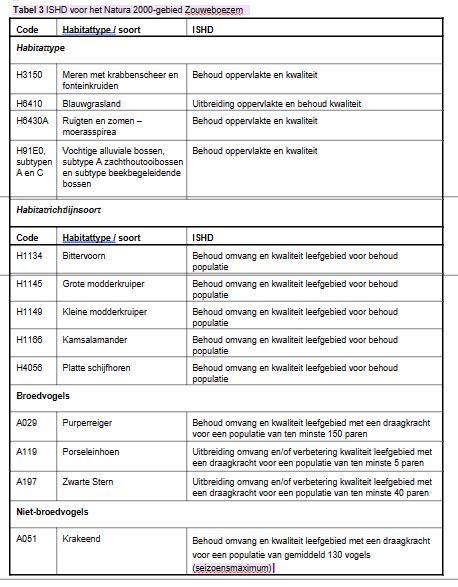 3.4Huidige situatie Natura 2000 instandhoudingsdoelen
3.4.1 H3150 Meren met krabbenscheer en fonteinkruiden Beschrijving habitattype Meren met krabbenscheer en fonteinkruiden zijn begroeiingen van drijvende en ondergedoken waterplanten. Ze komen voor in matig voedselrijke meren, plassen en andere relatief diepe, vlakvormige stilstaande wateren. Het water is helder en de vegetatie wordt gevormd door breedbladige soorten fonteinkruid, krabbenscheer en/of groot blaasjeskruid. Daarnaast kunnen in begroeiingen enkele planten met grote drijfbladen voorkomen. Landelijke staat van instandhouding De landelijke staat van instandhouding is matig ongunstig. In Nederland is de oppervlakte en de kwaliteit van meren met krabbenscheer en fonteinkruiden in de tweede helft van de 20e eeuw sterk achteruitgegaan. Dit is vooral een gevolg van watervervuiling (eutrofiëring, vertroebeling). In de laatste jaren tekent zich een herstel af (Ministerie van LNV, 2008b). In het rivierengebied bestaan de begroeiingen van dit habitattype vooral uit gemeenschappen met groot blaasjeskruid. Krabbenscheergemeenschappen zijn hier vrijwel volledig verdwenen. Het toekomstperspectief van dit habitattype is matig ongunstig. Een blijvende zorg is de inlaat van gebiedsvreemd water in laagveengebieden, In het rivierengebied ligt een speciale opgave voor verbetering van de verspreiding, uitbreiding van de oppervlakte en verbetering kwaliteit van krabbenscheerbegroeiingen en de daaraan gekoppelde fauna. Actuele verspreiding en kwaliteit In de Zouweboezem is 11,7 ha meren met krabbenscheer en fonteinkruiden aanwezig in het deelgebied De Boezem. De kwaliteit van het habitattype is, op grond van provinciale vegetatieopnamen, goed en het bestaat uit vegetaties met groot blaasjeskruid (5Bb2 associatie van groot blaasjeskruid Utricularietum vulgaris) (Janssen, 2012). Op enkele plaatsen komt in De Boezem krabbenscheer voor (NDFF, waarnemingen afgelopen vijf – tien jaar). In de habitatkartering wordt aangegeven dat in 30% van het in Figuur 10 weergegeven oppervlak de betreffende vegetatietypen van het habitattype voorkomen, wat overeenkomt met 3,5 ha. Groot blaasjeskruid komt plaatselijk ook voor in de sloten tussen percelen met doorgeschoten griend of elzenbroek in de eigenlijke Zouweboezem. Deze sloten voldoen echter niet aan de criteria van het habitattype H3150 (Janssen, 2012). Verder komt krabbenscheer ook op enkele locaties voor in de Nieuwe Zederik en in Polder Achthoven (NDFF, waarnemingen afgelopen vijf - tien jaar), deze locaties voldoen tevens niet aan de criteria van het habitattype. Het habitattype H3150 is afhankelijk van een goede waterkwaliteit. Kritisch zijn hierbij een lage fosfaat- en sulfaatconcentratie. Een te hoge fosfaatconcentratie leidt tot groei van algen en hierdoor treedt competitie op met waterplanten. Hierdoor kunnen ondergedoken waterplanten verdwijnen. Rondom de Boezem is in de periode 2013-2015 sprake van P-totaal waarden van tussen de 0,08 en 0,19 mg/l, tegenover een gewenste concentratie van tussen de 0,04 en 0,1 mg/l (zie Figuur 8). Een kanttekening hierbij is wel dat de meetpunten zich veelal bevinden in de Oude Zederik en niet in de Boezem (= twee gescheiden peilgebieden). Evident is dat de waarden (momenteel) nog te hoog zijn. Figuur 8 Zomergemiddelde fosfaat concentratie 2013-2015. Zie onderstaande figuur voor de ligging van de meetpunten, die zowel in de Zouweboezem als in het Merwedekanaal liggen. Voor het Merwedekanaal is het KRW doel 0,25 mg/l. voor de Zouweboezem is dit 0,15 mg/l. Bron data: Waterschap Rivierenland Figuur 9 Fysisch-chemische meetpunten Merwedekanaal en Zouweboezem. In het gebied zijn twee grote bronnen voor fosfaat, namelijk het inlaatwater van het Merwedekanaal en de nalevering van fosfaat dat opgeslagen ligt in de waterbodem. Aangezien 79% van de aanvoer van water naar de Zouweboezem afkomstig is van het Merwedekanaal, is de waterkwaliteit daar relevant. De fosfaatconcentratie van dit water is 0,14 mg/l, wat enerzijds betekent dat dit aanzienlijk bijdraagt aan de totale fosfaatlast in het gebied, maar ook dat nalevering van fosfaat uit de waterbodem binnen de Zouweboezem mogelijk een grote bron van fosfaat is (Bell et al. 2004, DHV, 2013). Fosfaat is in de waterbodem gebonden aan ijzer. Onder invloed van hoge sulfaatconcentraties en/of lage zuurstofconcentraties kan dit fosfaat vrijkomen in de waterkolom, in een proces dat ook wel ‘interne eutrofiering’ wordt genoemd. Op basis van metingen aan de waterbodemkwaliteit en de sulfaatconcentratie in het water kan worden geconcludeerd dat nalevering van fosfaat uit de bodem niet is uit te sluiten (DHV, 2013). Fosfaat: Natura 2000 versus KRW Van belang om te noemen is dat de normen voor fosfaatwaarden die vanuit de Kaderrichtlijn Water (KRW) aan de Oude en Nieuwe Zederik worden gesteld hoger zijn in termen van absolute concentraties dan de fosfaat streefwaarde voor H3150. Beide waterlichamen voldoen aan het ‘Goed Ecologisch Potentieel’ (GEP) van de KRW wanneer het zomergemiddelde voor totaal fosfaat lager is dan 0,2 mg/l. De streefwaarde voor H3150 ligt echter tussen 0,04 en 0,1 mg/l. De streefwaarde voor H3150 moet zodoende voor deelgebied De Boezem als leidend worden gezien. De verhoogde sulfaatwaarden in het water kunnen ook direct een negatieve invloed hebben op krabbenscheer. De huidige waarden in het oppervlaktewater kunnen leiden tot sulfide en/of ammoniumtoxiciteit bij slechte zuurstofomstandigheden. Naast waterkwaliteit is natuurbeheer van invloed op het habitattype. Het beheer in het deelgebied waar het type voorkomt (De Boezem) is gericht op het ontstaan van jonge rietvegetaties en het bevoordelen van de grote modderkruiper ten opzichte van andere vissoorten (periodieke droogval). Een van de beheermaatregelen in de Boezem is het wegvangen van concurrenten van de grote modderkruiper, waaronder de ruisvoorn, snoek en zeelt. Dit zijn typische soorten van H3150 meren met krabbenscheer en fonteinkruiden, en daarmee een indicatie van de kwaliteit van dit habitattype. Via het huidig peilbeheer, gericht op het simuleren van (meerjarige) peildynamiek van een natuurlijk moeras, wordt de vorming van moerasvegetatie gestimuleerd. Op plaatsen waar dit ook plaatsvindt, zoals de vloedvlaktes van de Onner- en Oostpolder in Groningen, blijkt dat dit beheer goed kan samengaan met het handhaven en de ontwikkeling van vegetaties met waterplanten (mededeling J. van der Winden, 2018). Figuur 10 ligging van H3150 meren met krabbenscheer en fonteinkruiden (rode arcering) in de Boezem. De witte lijn geeft de begrenzing aan van het Natura 2000-gebied Zouweboezem. Het voorkomen van de typische soorten, zoals opgenomen in het profieldocument van meren met krabbenscheer en fonteinkruiden (Ministerie van LNV, 2008b), en de aanvullende typische soorten is opgenomen in Tabel 4. 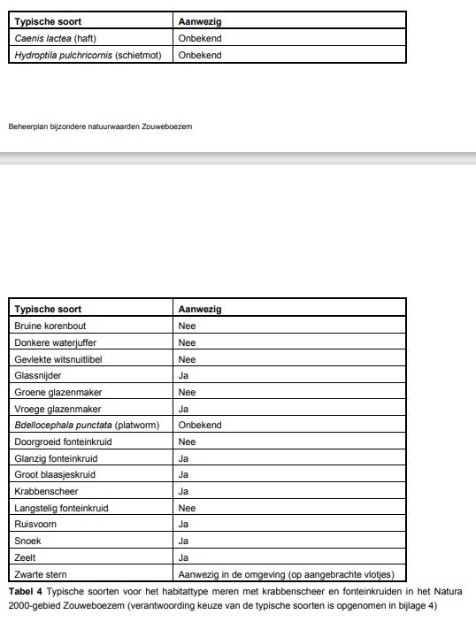 Voor dit habitattype geldt een doelstelling voor behoud van oppervlakte en kwaliteit. Tabel 5 Synthese huidige situatie H3150 meren met krabbenscheer en fonteinkruiden 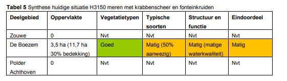
3.4.6 H1145 Grote modderkruiper Beschrijving soort De grote modderkruiper is een langgerekte, tot 30 centimeter lange vis. Hij leeft in ondiep, stilstaand of zeer langzaam stromend water met een dikke modderlaag op de bodem en een rijke watervegetatie. Van nature komt de soort voor in vergevorderde verlandingsstadia van grote en kleine wateren en in overstromingsvlaktes langs oevers. Het water waarin de grote modderkruiper voorkomt mag voedselrijk zijn en doordat de soort in staat is over te stappen op darm- en huidademhaling kan hij zowel in zuurstofrijk als zuurstofarm water overleven. Hierdoor heeft de grote modderkruiper een goede concurrentiepositie in vergelijking met andere vissen. De soort is vooral in de schemering en ’s nachts actief, overdag verstopt deze soort zich in de modderbodem van wateren. Ook ’s winters houdt de grote modderkruiper zich op in de waterbodem. De modderlaag is daarom van groot belang voor de aanwezigheid van de modderkuiper. De minimale dikte van de modderlaag is 10 centimeter, maar een dikkere bodemlaag verhoogt de overlevingskansen van grote modderkruipers tijdens vorstperioden. Tijdens droogte kan de grote modderkruiper ook in deze modderlaag overleven. De vis paait van maart tot eind juni op plekken met ondiep water, doorgaans dicht langs de oevers in holten of onder de beschutting van begroeiing. Overhangende wilgen bijvoorbeeld of drijvende watervegetatie bieden geschikte beschutting. De eitjes worden zowel in de watervegetatie als op een kale ondergrond afgezet. Figuur 16 De grote modderkruiper Fotograaf: Adrie van Heerden Pas sinds de laatste jaren is steeds beter bekend waar de grote modderkruiper voorkomt. Op basis van het geringe aantal inventarisatiegegevens is geen uitspraak te doen over de landelijke staat van instandhouding (Ministerie van LNV, 2008d). Een belangrijke bedreiging voor de grote modderkruiper vormt het intensief schonen van sloten, waarbij waterplanten en modderlagen worden verwijderd. Dit omdat de soort zich verschuilt in de modderlaag en niet wegzwemt bij gevaar. Bovendien koloniseert de grote modderkruiper gebieden waar hij uit verdwenen is maar zeer langzaam (Ministerie van LNV, 2008d). Naast deze habitatvernietiging is de soort ook gevoelig voor veranderingen in de stroomsnelheid in het water, verdroging, vermesting en verontreiniging van het water en barrièrewerking/versnippering. Ook voor verzuring, verzilting, verandering van overstromingsfrequentie en verandering van substraatdynamiek is de grote modderkruiper gevoelig (Van Woersem & Jager, 2008). Actuele verspreiding en kwaliteit De Zouweboezem en de omringende polders maken deel uit van het kernverspreidingsgebied van de grote modderkruiper in het centrale rivierengebied. De Zouweboezem herbergt de grootste aantallen van de soort die in ons land bekend zijn. Met name het deelgebied de Boezem is een zeer geschikt gebied voor de grote modderkruiper (Ministerie van LNV, 2008a). Veldinventarisaties uit 2002 tonen aan dat er naar schatting zeker enkele tienduizenden exemplaren in De Boezem voorkomen (Van der Winden et al, 2002). In 2006 zijn er wederom diverse waarnemingen van de grote modderkruiper gedaan in De Boezem en Polder Achthoven (Van Eekelen et al., 2006). In dergelijke extensief beheerde gebieden met minder gunstige omstandigheden voor andere vissoorten kunnen hoge dichtheden van de soort worden aangetroffen (Van Eekelen et al., 2006). De verwachting is dat deze aantallen in de huidige situatie lager liggen omdat de vegetatie is veranderd door successie en de aanwezigheid van ganzen. Door de aanwezigheid van ganzen zijn de waterplantenvegetaties vrijwel verdwenen. Successie heeft ervoor gezocht dat de oever dichter begroeid is en zich minder in een pioniersstadium bevindt. In 2005 heeft Bureau Waardenburg inventarisaties uitgevoerd in De Boezem en Polder Achthoven en zijn gegevens verzameld door onder andere RAVON en de Vogelwacht Vijfheerenlanden (Eekelen et al, 2006; Spikmans et al, 2008a). Hieruit blijkt dat de grote modderkruiper in beide deelgebieden voorkomt. In 2014 is het gehele gebied onderzocht met behulp van eDNA techniek op de aanwezigheid van kamsalamander en grote modderkruiper (RAVON, 2014). Voor grote modderkruiper geldt dat de inventarisatie een steekproef betreft, gezien de zeer grote hoeveelheid aan geschikte sloten die buiten beschouwing zijn gelaten. Het kerngebied voor grote modderkruiper bevindt zich op basis van het verrichte in De Boezem en Polder Achthoven. Het leefgebied van grote modderkruiper heeft hier naar verwachting een behoorlijk areaal. Er zijn zowel hoge als lage eDNA concentraties aangetroffen, echter de relatie tussen populatiegrootte en de eDNA concentratie is voor grote modderkruiper nog niet voldoende onderbouwd om daar harde uitspraken over te doen. In de Zouwe is grote modderkruiper bij het onderzoek in 2014 (RAVON, 2014) niet gedetecteerd, al bood een aantal bemonsterde locaties geschikt habitat. In de Zouwe liggen mogelijk ook locaties waar de soort voor kan komen die in dit onderzoek buiten beschouwing zijn gelaten. De verwachting voor dat gebied ligt echter laag op basis van de steekproef in dit onderzoek waarin geen grote modderkruiper werd gedetecteerd. Bij eerdere onderzoeken, uitgevoerd in de Oude Zederik, een watergang die niet heel geschikt is voor een soort als de grote modderkruiper, is de soort ook niet aangetroffen (Beers et al., 2007, Kroon & De Laak 2008). Het voorkomen van grote modderkruiper in De Boezem hangt samen met een combinatie van factoren. De aanwezigheid van een grote randlengte aan verlandingsvegetatie en water in combinatie met plas-dras gebieden is van belang als voortplantingshabitat. Daarnaast is het van groot belang dat grote (bodemwoelende) vis ontbreekt. Dit is in de Boezem het geval omdat intrek via het oppervlaktewater verhinderd wordt en omdat dankzij het natuurlijke waterstandsverloop in de zomer lage waterpeilen aanwezig zijn waartegen veel vissoorten slecht bestand zijn. (Van Woersem & Jager, 2008; Grootjans & Van der Welle, 2007). Dit alles samen met de aanwezigheid van kwel water uit de Lek en de Oude Zederik maakt(e) De Boezem tot een ideaal habitat voor de grote modderkruiper. Er zijn echter aanwijzingen (bijvoorbeeld door sterke de afname van foeragerende purperreigers in De Boezem) dat er sprake is van een sterke achteruitgang van de populatie grote modderkruipers in De Boezem (mededeling J. van der Winden, 2018). De verlandingsvegetatie is onderhavig aan successie en de plasdras gebieden en waterplanten zijn aangetast door ganzenvraat. Hierdoor is de Boezem minder geschikt geworden voor de grote modderkruiper. Een aantal sloten in Polder Achthoven waar een bemonsteringsonderzoek is uitgevoerd door RAVON (Spikmans et al, 2008a) is beschreven als redelijk. Dit komt met name door de afwezigheid van schuilmogelijkheden voor de soort langs de oevers. Er is echter wel voldoende oevervegetatie aanwezig om de sloten als geschikt leefgebied te doen fungeren. De vegetatie zorgt voor de aanwezigheid van voldoende voedsel en voor schuilmogelijkheden. Polder Achthoven wordt daarom ook als geschikt leefgebied voor de grote modderkruiper gekwalificeerd. De Oude Zederik in het deelgebied de Zouwe biedt geen geschikt leefgebied voor de soort. De smalle slootjes in de rietlanden zouden echter wel geschikt leefgebied kunnen vormen. Figuur 17 Waargenomen verspreiding van grote modderkruiper in de Zouweboezem met data uit de NDFF/RAVON Database en de resultaten uit het eDNA onderzoek uit 2014 De populaties van de grote modderkuiper bevinden zich in de verschillende deelgebieden. Uitwisseling tussen de deelgebieden is alleen mogelijk via water in- en uitlaten. Vanuit het deelgebied Zouwe is er ook migratie van en naar het Merwedekanaal mogelijk. Voor de uitwisseling binnen het leefgebied zijn er geen specifieke eisen vanuit de soort gezien. Een beoordeling van de uitwisselingsmogelijkheden is daarom niet van toepassing. Tabel 14 Synthese huidige situatie H1145 grote modderkruiper 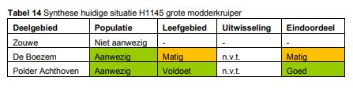
3.4.7 H1149 Kleine modderkruiper Beschrijving soort De kleine modderkruiper komt in verschillende typen water voor; van slootjes tot rivieroevers. Hierbij heeft de soort een voorkeur voor wateren met bodems van zand of zacht, schoon slib, dikke modderbodems worden vermeden. De kleine modderkruiper is vooral ’s avonds en ’s morgens vroeg actief. Als hij niet actief is verstopt hij zich in de waterbodem, onder stenen of plantenwortels of tussen draadalgen. Het afzetten van de eieren doet de soort bij voorkeur op kale zandige bodem. De kleine modderkruiper kan, evenals de grote modderkruiper, darmademhaling toepassen, maar dit is onvoldoende om aan de gehele zuurstofbehoefte te voldoen; wel is het mogelijk hiermee perioden met verminderde zuurstofconcentraties in het water te overleven. Kleine modderkruipers leven van kleine diertjes zoals watervlooien, kreeftjes, en raderdiertjes die uit de modder worden gefilterd. De kleine modderkruiper komt in vrijwel het gehele land voor. Gegevens over aantallen en aantalsontwikkeling ontbreken echter (Ministerie van LNV, 2008e). Lokale populaties kunnen verstoord worden door vermesting of achterstallig baggeronderhoud. Dit kan leiden tot een zuurstofarme omgeving, waarin zich maar weinig macrofauna en waterplanten kunnen handhaven. Omdat het dan aan voedsel ontbreekt, afgestorven organisch materiaal en vooral halfverteerde plantenresten, wordt de situatie voor de kleine modderkruiper in dit type sloten onleefbaar. Bij het verwijderen en afvoeren van bagger kan de populatie kleine modderkruipers vernietigd worden. De kleine modderkruiper is zeer gevoelig voor habitatvernietiging, veranderingen van stroomsnelheid, verdroging, vermesting en verontreiniging van het water, barrièrewerking/versnippering en mechanisch schonen van sloten (Ministerie van LNV, 2008e; Van Woersem & Jager, 2008; Kroon & De Laak, 2008). Figuur 18 De grote (boven) en kleine modderkruiper (onder) Fotograaf: Adrie van Heerden Actuele verspreiding en kwaliteit Er is weinig bekend over de omvang van de populatie van de kleine modderkruiper in de Zouweboezem. Gezien het algemene voorkomen in Nederland en de geschiktheid van de Zouweboezem als leefgebied is de verwachting dat de kleine modderkruiper in het gehele gebied voorkomt. Tijdens onderzoek in 2002 (van den Berg, 2002) is de kleine modderkruiper in Polder Achthoven en de Zouwe in lage aantallen aangetroffen. De kleine modderkruiper is tijdens een inventarisatie in 2005 met name aangetroffen in de meer open sloten waarin door de waterafvoerende functie relatief veel stroming aanwezig is. Het gaat om de sloot aan de oostzijde van De Boezem en de Zouwe (Van Eekelen, 2005). In 2013 zijn de deelgebieden Zouwe en Polder Achthoven opnieuw geïnventariseerd op het voorkomen van de kleine modderkruiper. Hieruit is gebleken dat de soort in beide deelgebieden aanwezig is (zie figuur hieronder). Figuur 19 Waarnemingen van de kleine modderkruiper uit 2013 (Schiphouwer en Janse, 2013). De kleine modderkruiper gebruikt voor zijn hele levenscyclus hetzelfde habitat. De soort komt onder andere voor in sloten met stilstaand tot langzaam stromend water, wat in alle deelgebieden aanwezig is. Alle deelgebieden zijn voldoende groot en hebben een groot aantal watergangen een goede waterkwaliteit om een populatie kleine modderkruipers ter herbergen nu en in de toekomst. Belangrijk is dat er niet te veel bagger in het systeem komt. In 2009 zijn in de deelgebieden Boezem en Zouwe baggerwerkzaamheden uitgevoerd, waarbij 40.000 m3 slib is verwijderd. De verwachting is dat deze herstelwerkzaamheden een positieve bijdrage hebben geleverd leveren aan de geschiktheid van het leefgebied voor kleine modderkruipers. Een lichte mate van zuurstofloosheid kan de kleine modderkruiper goed hebben, er moeten dan wel voldoende waterplanten en kleine water beestjes in het water aanwezig zijn. Gezien de huidige waterkwaliteit mag aangenomen worden dat er in de huidige situatie voldoende waterplanten en dierlijk voedsel aanwezig is. De populaties van de kleine modderkruiper bevinden zich in de verschillende deelgebieden. Uitwisseling tussen de deelgebieden is alleen mogelijk via water in- en uitlaten. Vanuit het deelgebied Zouwe is er ook migratie van en naar het Merwedekanaal mogelijk. Voor de uitwisseling zijn er geen specifieke eisen vanuit de soort gezien. Een beoordeling van de uitwisselingsmogelijkheden is daarom niet van toepassing. 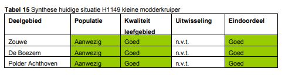
3.4.10 A029 Purperreiger Beschrijving soort De purperreiger broedt in water- en moerasrijke landschappen. De nestplaats ligt in uitgestrekte rietvelden, waar doorgaans bodemnesten worden gemaakt op een kniklaag van oud, niet te dicht, sterk riet in ondiep water. Ook maken de purperreigers nesten in wilgenstruiken en soms in moerasbos, tussen blauwe reigers. Purperreigers foerageren tot op twintig kilometer afstand van de kolonie, maar veelal binnen tien kilometer. Geschikte foerageergebieden van purperreigers bestaan uit laagveengraslanden met een hoge slootdichtheid (>15 km slootlengte per 100 ha.). Aan de sloten worden verder de volgende eisen gesteld: lage en vlakke oevers, niet te smalle sloten, gevarieerde en niet te hoge oevervegetatie, diversiteit in drijvende waterplanten, veel variatie in prooisoorten en hoge aantallen vis (Van der Winden, 2004). De purperreiger foerageert voornamelijk op vis (o.a. driedoornige stekelbaars, grote modderkruiper), waterinsecten, kleine zoogdieren (veldmuizen) en amfibieën. Het oppervlak van een goed foerageergebied ligt in de ordegrootte 30 tot 50 ha per individu. In redelijke foerageergebieden ligt dit in de ordegrootte 100 tot 150 ha, tot meer dan 200 ha in slechte gebieden. Van doorslaggevend belang is hierbij overigens de slootlengte, per voedselterritorium is dit, afhankelijk van de kwaliteit van de sloten, 17 tot 30 kilometer (Van der Winden & Van Horssen, 2001) Na een jarenlange afname neemt het aantal purperreigers in Nederland sinds de jaren ’90 langzaam toe. Het oppervlak geschikt leefgebied gaat echter nog achteruit in kwaliteit. De landelijke staat van instandhouding wordt als ongunstig beoordeeld, waarbij in acht genomen moet worden dat de omstandigheden in de Sahel (het overwinteringsgebied) van grote invloed zijn op de populatie in Nederland (Ministerie van LNV, 2008i). De purperreiger is gevoelig voor vermesting en verdroging van zijn leefgebied. Deze factoren veroorzaken een afname van oppervlakte en kwaliteit van het waterriet, versnelde verlanding en daarmee vermindering van het voedselaanbod. Intensieve rietexploitatie heeft dezelfde nadelige effecten. De purperreiger broedt in kolonies, meestal laag in rietvegetaties, waardoor hij gevoelig is voor grondpredatoren zoals de vos. Dit is een natuurlijke situatie. Echter mogelijk zijn door verlanding en verdroging de broedkolonies gemakkelijker bereikbaar voor predatoren wat leidt tot afname van de soort. Zoals vele kolonievogels heeft de purperreiger tijdens de broedtijd een grote verstoringsgevoeligheid en is die buiten de broedtijd matig tot gemiddeld (Ministerie van LNV, 2008i; Van Woersem & Jager, 2008). Figuur 23 Purperreiger Actuele verspreiding en kwaliteit Al gedurende lange tijd (in ieder geval vanaf 1941) broeden er purperreigers in de Zouweboezem. De kolonie purperreigers in de Zouweboezem is de grootste van Nederland. Tot begin jaren ’90 ging het in de Zouweboezem om kleine aantallen (ordegrootte 10 – 20 broedparen). Vervolgens is het aantal broedparen gegroeid; 185 paren in 2007, 165 in 2014, 209 broedparen in 2016 en 168 broedparen in 2017, zie ook Figuur 24 (SOVON, 2018). In de Zouwe bevond de broedkolonie van de purperreiger zich in de rietlanden met oud riet aan de westelijke zijde van de Oude Zederik (Van der Winden, 2005). Lang hebben de purperreigers in één kolonie gebroed in het deelgebied Zouwe in overjarig riet. Sinds 2009 is een tweede kolonieplaats in struweel op een hoogte van twee tot vier meter aanwezig. Sinds 2011 wordt alleen nog gebroed in het moerasbos. Waarschijnlijk is dit het gevolg van de kolonisatie van het gebied door vossen. Het moerasbos is zeer moeilijk toegankelijk en de nesten bevinden zich overwegend op takken boven het water (Van der Winden, 2012). De huidige situatie is kwetsbaar, omdat er slechts één geschikte kolonielocatie aanwezig is (Van der Winden et al., 2008). Bovendien is er sinds enkele jaren binnen de kolonielocatie sprake van een verschuiving in zuidwaartse richting, om (tot nu toe) onbekende reden (mededeling J. van der Winden, 2018). In 2013 hebben in de omgeving een aantal nieuwe vestingen plaatsgevonden, die zijn te beschouwen als satellietkolonies van de kolonie in de Zouweboezem (mededeling J. van der Winden, 2013). Er is geen hoofdoorzaak aan te wijzen waardoor het gebied in de laatste jaren is gekoloniseerd door de vos. Hierbij spelen namelijk zowel de omvang van de lokale populatie als het peilbeheer een rol. Volgens lokale kenners is in de laatste 5-10 jaar de populatie vossen in de omgeving van de Zouweboezem sterk toegenomen (persoonlijke mededeling Vogel- en Natuurwacht, LTO Zuid, Zuid-Hollands Landschap, lokale rietsnijders). Verder maakt een lage waterstand het rietland tijdens het broedseizoen droger, wordt het meer toegankelijk voor de vos, met risico op predatie. De ontwikkeling van het rietmoeras als broedlocatie vormt ook een knelpunt. Het huidige tegennatuurlijk peilregime in de Zouweboezem belemmert een goede rietontwikkeling. Voor de ontwikkeling van vitaal rietland, dat geschikt is als broedbiotoop van de purperreiger, is een meer natuurlijk waterpeilregime, met een hoge waterstand in de winter en een lagere waterstand in de zomer, noodzakelijk. De rietontwikkeling wordt tevens belemmerd door de hoge begrazingsdruk van ganzen. In het groeiseizoen van helofyten slapen er gezamenlijk enkele honderden grauwe en Canadese ganzen die lisdodde, mattenbies en riet begrazen. Hierdoor krijgt de rietvegetatie een meer open karakter, waardoor het minder geschikt wordt als broedlocatie voor de purperreiger (Van der Winden et al., 2008). In Figuur 24 is de trend van de purperreiger van de laatste tien jaar in het Natura 2000-gebied de Zouweboezem opgenomen. Te zien is dat de aantallen purperreiger de sinds 1990 fors is toegenomen. De laatste jaren lijkt de populatie omvang in de Zouweboezem zich te stabiliseren. Door de positieve trend scoort de purperreiger goed op het aspect populatie. Figuur 24 Aantal broedparen en trend purperreiger in de Zouweboezem (SOVON, 2018). In 2016 had de kolonie een omvang van 209 broedparen, in 2017 168 broedparen (mededeling Zuid-Hollands Landschap). In groen is de instandhoudingsdoelstelling weergegeven. Een belangrijk onderdeel van het voedsel van de purperreigers vormen kleine vissen, waaronder modderkruipers. Het deelgebied De Boezem vormde een geschikt foerageergebied, maar in de huidige situatie foerageren hier nauwelijks nog purperreigers (mededeling J. van der Winden, 2018. De purperreigers foerageren in Polder Achthoven. Dit gebied heeft echter onvoldoende draagkracht voor de aanwezige kolonie. De purperreigers uit de Zouweboezem foerageren daarom ook in de omringende gebieden zoals de Lopikerwaard, Vijfheerenlanden, Alblasserwaard en in beperkte mate in de oostelijke Krimpenerwaard (Van der Winden & Van Horssen, 2001). Het foerageergebied is van voldoende basiskwaliteit voor het behouden van de huidige populatieomvang (Van der Winden et al., 2008). De kleine slootjes in deze weilanden bieden een geschikt foerageergebied voor de purperreigers op een korte afstand van de broedkolonie. Het broedgebied en het foerageergebied van de purperreiger gaat in elkaar over. Tussen de Zouwe waar de kolonie purperreigers broedt, De Boezem en Polder Achthoven, en de omliggende poldergebieden die belangrijk foerageergebied vormen, zitten geen barrières die een hindernis vormen voor de vogels. De uitwisselingsmogelijkheden worden daarom als goed beoordeeld. De beide andere deelgebieden maken onderdeel uit van het leefgebied van de populatie uit deelgebied Zouwe, en hebben daarom geen zelfstandig eindoordeel gekregen. 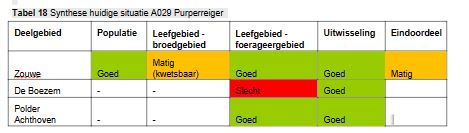
3.4.11 A119 Porseleinhoen Beschrijving soort Het porseleinhoen broedt in open moerassige terreinen van minimaal 1-2 ha met matig voedselrijk water. De vogel zoekt een permanent (of periodiek) natte situatie van ongeveer 10 tot 35 cm diep water op met een weelderige vegetatie van biezen, zeggen, lisdodden en andere moerasplanten (hoogte 0,5-1 m). Naast moerassen zijn ook laat in het voorjaar geïnundeerde uiterwaarden (graslanden) geschikt als broedbiotoop. Slechts in zeer specifieke situaties kunnen porseleinhoenen in rietland voorkomen als dit een zeer open structuur kent, gedomineerd wordt door zeggen en zeer nat is. Het porseleinhoen maakt zijn nest in dichte vegetaties van riet, zeggen of grassen boven of nabij ondiep water. In optimale situaties is er ongeveer één broedpaar per drie hectare moeras aanwezig (Van der Winden et al., 2008). Het porseleinhoen foerageert in de omgeving van zijn nest langs slikranden en onder de dekking van een weelderige vegetatie. De moerasvegetatie mag niet te dicht van structuur zijn zodat het dier er goed doorheen kan lopen. Het voedsel bestaat voornamelijk uit kleine dieren zoals schaaldiertjes, kleine amfibieën en insecten, maar ook zaden en vruchten. Het porseleinhoen profiteert van de ontwikkeling van natte natuur en plas-drassituaties. De verspreiding van de soort in Nederland neemt hierdoor toe. Ook treedt er een lichte stijging op in de aantallen. Het is echter onduidelijk of dit een structurele verbetering is, de aantallen liggen nog beduidend lager dan nodig zijn voor een duurzame sleutelpopulatie (400 tot 800 broedparen). De landelijke staat van instandhouding is daarom als zeer ongunstig beoordeeld (Ministerie van LNV, 2008k). De Nederlandse populatie fluctueert jaarlijks sterk, veelal in samenhang met grillige waterstanden en droogte in zuidelijker gelegen landen. De soort weet snel gebruik te maken van tijdelijk geschikte locaties. Geschikte broedlocaties kunnen op allerlei plaatsen in het land ontstaan (en weer verdwijnen), wat het vrijwel onmogelijk maakt om een jaarlijks volledig beeld van het voorkomen te krijgen. Ondanks de wisselende stand van deze nachtvogel lijkt er soms geprofiteerd te worden van de aanleg van nieuwe moerassen met natte kruidenrijke vegetaties. Handhaven en uitbreiden van oppervlakte moeras, extensief graslandbeheer en herstel van kwel in laagveenmoerassen kan het porseleinhoen verder helpen (Van Dijk et al, 2009). Het porseleinhoen is zeer gevoelig voor verdroging van moerasgebieden, maar ook voor waterpeilbeheer. Hierbij zijn niet alleen de waterstand, maar ook het tijdstip en de duur van verhoogde waterpeilen van belang. Verzuring, eutrofiëring en verontreiniging van het oppervlaktewater zijn andere bedreigingen. Daarnaast zijn oppervlakteverlies en versnippering grote bedreigingen voor het voorkomen van porseleinhoen. Omdat het porseleinhoen zich verbergt tussen vegetatie is de soort matig gevoelig voor verstoring (Van Woersem & Jager, 2008; Ministerie van LNV, 2008k). Figuur 25 Porseleinhoen met kuiken. Fotograaf: Gerard de Jong Actuele verspreiding en kwaliteit In de Zouweboezem broedt het porseleinhoen zeer wisselend. De laatste 5 jaar is er maximaal 1 broedpaar aanwezig geweest in de Zouweboezem, zie ook Figuur 26. Het enige broedpaar van bevind zich in het rietland in het zuidwesten van deelgebied De Boezem (Van der Winden, 2006 en 2012). Het betreft hier een locatie waar in het kader van het LIFE project in 2010 moerasbos is verwijderd en het maaiveld is afgegraven ten behoeve van moerasontwikkeling. Als er naar het aantal broedparen over een iets langere periode wordt gekeken (Figuur 26) is te zien dat in het begin van de eeuw het aantal broedparen een stuk hoger was, met maximaal 9 paar in 2000. Deze hoge aantallen zijn te verklaren door de toenmalige recente inrichting van De Boezem. De pionierssituatie die na de herinrichting aanwezig was, is zeer geschikt voor het porseleinhoen. Naast een veranderend vegetatietype waardoor de grote variatie deels is te verklaren is een grote variatie in het aantal broedparen zeer kenmerkend voor het porseleinhoen. Dit hangt samen met veranderingen in waterstanden. Gezien de lage aantallen broedparen die recent in de het Natura 2000-gebied aanwezig zijn vergeleken met de hogere aantallen broedparen rond 2000 wordt de populatie-ontwikkeling van het porseleinhoen als negatief beoordeeld. Figuur 26 Aantal broedparen en trend porseleinhoen in de Zouweboezem (SOVON, 2018). Vanaf 2015 en 2016 waren geen broedparen aanwezig. De aanwezigheid van het porseleinhoen in een gebied is sterk afhankelijk van het waterpeil en de aanwezige pioniersvegetaties in het gebied op het moment dat de soort terug komt van zijn overwinteringslocatie. Als het gebied te droog is of de vegetatie te dicht zal de soort een ander gebied opzoeken om dat jaar te broeden. Het huidige tegennatuurlijke peilregime in de Zouweboezem belemmert een goede moerasontwikkeling. Ook de hoge stand aan overzomerende ganzen (hoge graasdruk op jong [riet]moeras) belemmert een goede moerasontwikkeling. Voor de ontwikkeling van pionierstadia in moerasontwikkeling, die geschikt zijn als broedbiotoop voor de porseleinhoen, is een meer natuurlijk peilregime, met een hoge waterstand in de winter en een lage waterstand in de zomer, noodzakelijk. Bovendien moet in het voorjaar (maart/april) en/of de vroege zomer (juni) het waterpeil 10 - 35 cm boven maaiveld staan in grote delen van het perceel. Ook moet er voldoende dynamiek in het gebied aanwezig zijn. Door de peildynamiek, binnen het seizoen maar ook het verschil in dynamiek van jaar tot jaar, ontstaat er een wat meer open begroeiing en jong moeras. In de Zouwe is de vegetatie op veel delen vrij dicht. Dit is goed voor veel rietvogels, maar het porseleinhoen prefereert een meer open zeggenmoeras met lage helofyten zodat de vogels zich makkelijk door de vegetatie kan bewegen. Dit maakt dat de Zouwe in de huidige situatie grotendeels ongeschikt is voor het porseleinhoen. In De Boezem waren zoals eerder beschreven op diverse locaties zeer geschikte omstandigheden (pioniermoeras) aanwezig voor het porseleinhoen. Onder invloed van successie en (ganzen)vraat (zie ook paragraaf 3.4.10) zijn deze omstandigheden vrijwel verdwenen waardoor het in de huidige situatie grotendeels ongeschikt is voor het porseleinhoen. Figuur 27 broedlocatie van het broedpaar dat in 2012 aanwezig was, aangegeven met een rode ster (Van der Winden 2012). Het porseleinhoen maakt geen onderscheid tussen het broed- en foerageergebied. De beoordeling van de uitwisselingsmogelijkheden tussen deze gebieden is daarom niet van toepassing. Tabel 19 Synthese huidige situatie A119 Porseleinhoen 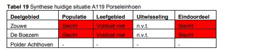
3.4.12 A197 Zwarte stern Beschrijving soort De zwarte stern is een kolonie-broedvogel die tijdens het broedseizoen gebonden is aan zoet water. De zwarte sterns bouwen hun nesten van nature op drijvende waterplanten zoals krabbenscheer of in vegetaties van waterlelie en gele plomp. Bij afwezigheid van geschikte waterplanten (op veel plaatsen zijn krabbenscheervegetaties verdwenen) gebruiken zwarte sterns in veel moerasgebieden tegenwoordig kunstvlotjes als nestgelegenheid, die speciaal voor dit doel worden neergelegd. Plaatselijk nestelt de soort langs slootkanten in graslanden en op drooggevallen modderplaten. De zwarte sterns eten in de broedtijd veel insecten en andere kleine ongewervelde dieren. Naast een voldoende groot aanbod van insecten is de aanwezigheid van visrijk water van belang, omdat vissen een noodzakelijke aanvulling op het dieet van de zwarte stern vormen. De vogels zoeken voedsel tot op vijf kilometers van het nest, zowel in moerassen als in sloten, of ook boven hooilanden in agrarische gebieden (Van Woersem & Jager, 2008; Ministerie van LNV, 2008m). Figuur 28 Broedende zwarte sterns op vlotjes. Fotograaf: Adrie van Heerden Hoewel de populatie zwarte sterns in Nederland de laatste jaren redelijk stabiel is, is het aantal broedvogels nog steeds veel lager dan halverwege de vorige eeuw. De soort is thans erg afhankelijk van de beschikbaarheid van kunstvlotjes om te broeden en heeft een kleinere verspreiding dan voorheen. De landelijke staat van instandhouding is als zeer ongunstig beoordeeld (Ministerie van LNV, 2008m). Recreatie (op land en water) zorgt voor veel verstoring van de zwarte stern. Een andere factor die een grote invloed heeft op de populatie is de waterkwaliteit. Dit leidt tot eenzijdige voeding van de kuikens en/of tot voedselgebrek. Het tekort aan geschikte broedplaatsen is op te lossen door het plaatsen van kunstvlotjes. Verlies van natuurlijke broedplaatsen ontstaat door (snelle) verlanding en het ontbreken van open water met moerasontwikkeling, ook hier speelt de waterkwaliteit een belangrijke rol. Zwarte stern is gevoelig voor weersomstandigheden op het moment van uitkomen van de kuikens. Daarnaast kan predatie door bijvoorbeeld bosuil of wezel een grote invloed hebben op het broedsucces. Actuele verspreiding en kwaliteit In het deelgebied de Zouwe komt één populatie zwarte sterns voor. De zwarte sterns broeden tussen de dichte velden van waterlelie en gele plomp in de Oude en Nieuwe Zederik (deelgebied Zouwe). Vanwege de afwezigheid van krabbenscheervegetaties broeden ze hier op kunstmatige nestvlotjes, die hier zijn uitgelegd. Omdat alle zwarte sterns in een broedkolonie broeden, zijn ze gevoeliger voor predatie of andere negatieve invloeden. De broedpopulatie was de laatste tien jaar redelijk stabiel met 25-35 paar zwarte sterns, maar in de laatste jaren is sprake is van een afname. Alle broedparen zijn gevestigd op de door de beheerder uitgelegde vlotjes. Die vlotjes liggen nu op twee locaties (zie Figuur 29) en vanwege de beperkte uitwijkmogelijkheden naar (natuurlijke) broedlocaties zijn de kolonies kwetsbaar. Dit is al gebleken doordat er reeds enkele jaren zware predatie heeft plaatsgevonden door bosuilen. Daarnaast woelen karpers ook de vlotjes los of worden vlotjes omgegooid door ganzen, waardoor de vlotjes ongeschikt worden als broedlocatie. De reproductie was in sommige jaren vrijwel nihil. Omdat de sterns jaarlijks gedwongen worden op dezelfde locatie te broeden, vormen ze voor langlevende predatoren een bekende voedselbron. Figuur 29 de twee broedkolonies van de zwarte stern in de Oude Zederik (aangegeven met rode ster). De mogelijkheid voor de sterns om op natuurlijke materialen te broeden is in de huidige situatie vrijwel nihil. Hoewel De Boezem in beginsel geschikt is als broedgebied, is de grote hoeveelheid ganzen een beperkende factor (onrust / verstoring, onvoldoende drijvende waterplanten) voor de sterns om zich daar te vestigen (Van der Winden, 2008). Gezien de beperkte uitwijkmogelijkheden voor het broeden en de onmogelijkheid om op natuurlijke materialen te broeden is het broedgebied van de stern als slecht beoordeeld. Figuur 30 Aantal broedparen en trend zwarte stern in de Zouweboezem (SOVON, 2018). In 2017 waren er 25 tot 28 broedparen aanwezig (mededeling Zuid-Hollands Landschap). In het deelgebied de Zouwe is broedbiotoop aanwezig en bovendien is in Polder Achthoven voldoende grasland met sloten aanwezig waarboven de zwarte sterns kunnen foerageren op insecten en vis. Door de ligging van dit foerageergebied vlak bij het broedgebied verliezen de vogels weinig energie met het vliegen naar het foerageergebied. Door de combinatie van de verschillende biotopen is het leefgebied, ondanks de kwetsbaarheid van de broedkolonie, beoordeeld als matig voor de zwarte stern in deelgebied Zouwe. De beide andere deelgebieden maken onderdeel uit van het leefgebied van de populatie uit deelgebied Zouwe, en hebben daarom geen zelfstandig eindoordeel gekregen. 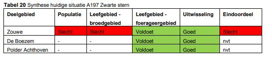 Hoofdstuk 4Visie Natuur
4.1 Inleiding In dit hoofdstuk wordt de visie op het Natura2000-gebied Zouweboezem beschreven. Deze visie geeft op basis van de gebieds- en systeembeschrijving uit hoofdstuk 3 de koers weer voor het behalen van de Natura 2000-doelen op de lange termijn, en afgeleid daarvan de ambitie voor de 1e beheerplanperiode (2019-2025). De visie is ook nodig voor het uitwerken van maatregelen (tot 2025) in hoofdstuk 7 en voor toetsing huidig gebruik in hoofdstuk 8. Gebruik en maatregelen moeten immers afgestemd zijn met de beoogde natuurwaarden en hiervoor benodigde maatregelen. In eerste instantie wordt een aantal belangrijke thema’s van de visie beschreven (zie paragraaf 4.2). Deze thema’s geven de lange termijn lange termijn visie op het gebied weer. Vervolgens wordt per Natura 2000 doel de instandhoudingsdoelstelling voor zowel de korte als de lange termijn beschreven (zie paragraaf 4.3).
4.2 Themas visie 4.2.1 Beslotenheid in rietmoeras In de zomerperiode is het in de riet- en moeraszones langs de Oude en de Nieuwe Zederik een drukte van belang. Verschillende soorten broedvogels maken gebruik van riet, ruigte en bosjes om een nest te maken. In de ondiepe wateren, sloten en graslanden in de directe omgeving vinden zij voedsel voor hun kuikens. Door cyclisch terugzetten van vegetaties zijn afwisselend langs de Zederik en in De Boezem jonge en open vegetaties en oudere en meer besloten riet- en hakhout vegetaties aanwezig. Met een dergelijk beheer wordt de moerasontwikkeling cyclisch in delen van het gebied teruggezet. In deelgebied de Zouwe gebeurt dit iedere acht tot tien jaar. In deelgebied De Boezem, een relatief jong natuurontwikkelingsgebied, vindt dit iedere tien tot vijftien jaar plaats door middel van maaiveldverlaging en baggeronderhoud. In dit laatste gebied wordt het moment waarop teveel verhouting op gaat treden als omslagpunt gezien: op dat moment is ingrijpen nodig om de waardevolle soorten te kunnen behouden. In delen van de rietlanden is dankzij een meer natuurlijk peilbeheer sprake van een natuurlijke verlanding, waarbij tevens pioniervegetaties van moerasvorming aanwezig zijn, en jonge rietvorming natuurlijk verloopt. De graasdruk van overzomerende ganzen vormt daarbij niet langer een knelpunt voor het ontstaan van jonge rietvegetaties. De zomerpopulatie van ganzen (grauwe gans, Canadese gans) in het Natura 2000-gebied is dusdanig dat er geen sprake is van overbegrazing van jonge rietlanden. Waar nodig zijn gebiedsdelen uitgerasterd om de graasdruk te beperken en de moerasontwikkeling op gang te helpen. In de winterperiode vormen de beschutte wateren van het Natura 2000-gebied een rustplaats voor overwinterende watervogels, waaronder krakeenden. Omdat de Nieuwe Zederik niet toegankelijk is kunnen de zwarte sterns hier in de zomerperiode ongestoord op één of meerdere locaties op vlotjes broeden. Waar noodzakelijk zijn op andere kolonielocaties maatregelen getroffen om de rust in het broedseizoen te waarborgen. Permanente aanwezige in de zomerperiode is de kolonie purperreigers. In de Zouweboezem zijn één of meerdere aparte kolonies aanwezig, met voldoende geschikt broedhabitat. De kolonie is al jaren de grootste van Nederland. Waar de waterkwaliteit in voorgaande jaren te lijden had onder zuurstofarme en eutrofe condities hebben de maatregelen in het kader van de Kaderrichtlijn Water en Natura 2000 gezorgd voor een robuuster watersysteem. Zowel de waterplantenvegetatie als de visstand (grote en kleine modderkruiper, bittervoorn) hebben hiervan geprofiteerd, hetgeen weer een positieve invloed heeft op de voedselbeschikbaarheid voor de broedende vogels. 4.2.2 De openheid van graslandpolders In Polder Achthoven is het historische kavelpatroon nog zichtbaar. De blauwe kleur van enkele percelen laat in het voorjaar zien waar bijzondere blauwgraslandvegetaties aanwezig zijn. Op deze en op andere, bloemrijke percelen grazen koeien (extensieve beweiding) en foerageren onder andere zwarte sterns op insecten. Dotterbloemhooilanden bieden een nestplaats aan weidevogels. De open graslandpercelen worden vooral in het oostelijk deel afgewisseld met bosjes, waaronder een eendenkooi. Dankzij de lichte kwel zijn bijzondere watervegetaties in de sloten en poelen ontstaan, terwijl het ook bijdraagt aan de goede kwaliteit van het blauwgrasland. Poelen met een goede waterkwaliteit vormen een aantrekkelijk habitat voor verschillende amfibiesoorten, waaronder de kamsalamander. Al sinds de aanleg van de poelen komt deze soort hier voor. In oostelijke richting zijn meer bosjes en houtopstanden aanwezig, onder andere van de eendenkooi. 4.2.3 Natuurlijk peilverloop In de moerassen in de Zouwe en in de Boezem is sprake van een natuurlijker peilverloop dat is afgestemd op het rietbeheer. Dit peil kent zowel een natuurlijke dynamiek binnen de verschillende seizoenen als tussen verschillende jaren (meerjarige peildynamiek) onder invloed van verschillen in verdamping en neerslag. Verschillende soorten profiteren van deze (meer natuurlijke en meerjarige) peildynamiek. In cultuurriet, dat jaarlijks gesneden wordt, zal dit betekenen dat de waterstand mee omhoog gaat met het groeiende riet, terwijl in overjarig riet de waterstand in de winter al omhoog kan (Bell et al. 2004). Bovendien is tijdens het voorjaar sprake van inundatie van de moeraslanden, zodat deze nat genoeg zijn voor het porseleinhoen en de purperreiger, maar te nat voor de vos. Een dergelijk peilbeheer zorgt er onder andere voor dat houtopslag en verruiging minder kans krijgen. De rietlanden in de Zouwe zijn voorzien van aparte kades, waardoor hier heel gericht peilbeheer kan worden gevoerd, zonder dat de andere functies in het gebied (wonen, vissen, varen) er hinder van ondervinden. In het moerasdeel van De Boezem kan tevens een natuurlijk peilbeheer worden gevoerd, met ruime mogelijkheden voor een natuurlijk peilverloop binnen de seizoenen, met variaties van jaar tot jaar. Naast hogere peilen in natte jaren, zijn hier door in sommige jaren periodieke droogval toe te staan in het groeiseizoen mogelijkheden om de moerasontwikkeling weer op gang te krijgen. Mogelijk is hierbij ondersteuning nodig door maatregelen om de graasdruk door overzomerende ganzen te beperken. Een meerjarige peildynamiek kan in dit deelgebied ook bijdragen aan de ontwikkeling van zones met drijvende en onderwaterplanten, en bijbehorende natuurwaarden (grote modderkruiper, zwarte stern). 4.2.4 Een landschappelijk en cultuurhistorisch waardevol gebied Het gebied vormt een onderbreking in de open graslandpercelen van de Alblasserwaard en Vijfheerenlanden. Op dagen met voldoende wind maalt molen De Vlietmolen voldoende schoon water op vanuit Polder Lakerveld. Ook in het beheer is de cultuurhistorie zichtbaar. Het rietsnijden en het griendonderhoud dragen bij aan het behoud van cultuurhistorisch erfgoed, het windrecht van de molen en aan het beheer van de natuurwaarden. Vanaf de Zouwendijk over het riet uitkijkend richting de molen en de rustig grazende koeien in Polder Achthoven waan je je enkele eeuwen terug in de tijd. 4.2.5 Recreatie gericht op beleving van de natuurlijke waarden Het gebied aan de westkant van de Oude Zederik is niet toegankelijk voor recreanten. Vanaf de Zouwendijk kan over het gebied uitgekeken worden. In de Boezem en Polder Achthoven zijn enkele onverharde paden voor wandelaars aanwezig, waar recreanten op eigen gelegenheid gebruik van kunnen maken. Langs de west- en oostkant van Polder Achthoven loopt een wandelroute; op twee plaatsen kan een doorsteek naar de noordzijde gemaakt worden. Achter vogelschermen zijn de vogels in de Boezem te bespieden. De Boezem is alleen vanaf de kade aan de noordoostzijde en vanaf een vogelscherm te zien en is niet vrij toegankelijk. Enkele keren per jaar organiseert de eigenaar en beheerder enkele excursies in het gebied. 4.2.6 Wonen en werken in en rond de Zouweboezem Wonen en werken vindt met name buiten de Natura 2000-begrenzing plaats, hoewel meerdere woningen bij Sluis en Meerkerk zich wel in het ‘buitendijkse’ gebied van de Zouweboezem, net buiten de begrenzing bevinden. Het afval dat vrijkomt bij het beheer van het riet wordt van oudsher opgestookt in het gebied zelf. Dit voorkomt dat er verdichting en bodembeschadiging optreedt. De agrarische sector, met name de melkveehouderij, is een bepalende factor voor de Alblasserwaard-Vijfheerenlanden. In de Gebiedsvisie ‘Samen werken aan een duurzame toekomst’ (Gebiedsplatform Alblasserwaard-Vijfheerenlanden, 2009) is als doel gesteld dat binnen tien jaar tenminste 50% van alle boeren in de Alblasserwaard-Vijfheerenlanden hun landerijen op natuurlijke wijze beheren: zorgen voor bloemrijke slootkanten en succesvol weidevogelbeheer. Hoewel de agrarische activiteiten buiten het Natura 2000-gebied plaatsvinden ontstaat op deze manier een grotere samenhang tussen natuurwaarden binnen en buiten de begrenzing. De huidige bebouwing (woningen en bedrijfsgebouwen) aangrenzend aan het Natura 2000gebied is nauwelijks veranderd ten opzichte van de situatie in 2010. Uitbreidingen of nieuwbouw hebben alleen plaatsgevonden op locaties waar dit geen belemmering biedt voor de kwetsbare natuurwaarden. Daarnaast zijn regels en voorwaarden vanuit bijvoorbeeld bestemmingsplan en keur van toepassing. Hiermee blijft ruimte geboden voor (kleinschalig) ondernemerschap. Bij aanpassingen aan de waterhuishouding in het Natura 2000-gebied zijn de afweging en uitwerking in dialoog met de belanghebbenden (zoals bewoners, gebruikers en beheerders) gemaakt (zie ook volgende paragraaf). 4.3Uitwerking van de visie voor de instandhoudingsdoelen
4.3.1 Invulling geven aan kernopgaven Elk Natura 2000-gebied maakt onderdeel uit van een Natura 2000-landschap. Per landschap zijn kernopgaven geformuleerd welke geen juridische status hebben, maar richtinggevend kunnen zijn bij het opstellen van het Natura 2000-beheerplan. Voor Natura2000-gebied Zouweboezem zijn de algemene opgave en de kernopgaven als volgt: 3.06 Krabbenscheerbegroeiingen: Behoud van meren met krabbenscheer en fonteinkruiden H3150, in de vorm van strangen, in het bijzonder herstel van krabbenscheerbegroeiingen, ook als broedbiotoop van zwarte stern A197. Krabbenscheerbegroeiingen komen voor in het deelgebied De Boezem. 3.08 Rietmoeras: Kwaliteitsverbetering en uitbreiding rietmoeras met de daarbij behorende broedvogels. Rietmoeras komt voor in de deelgebieden De Boezem en Zouwe. 3.09 Vochtige graslanden: Herstel blauwgraslanden H6410. Vochtige graslanden komen voor in het deelgebied Polder Achthoven 3.11 Vissen en amfibieën: Laagdynamische wateren voor kleine en grote modderkruiper H1145, bittervoorn H1134 en amfibieën, zoals kamsalamander H1166. De leefgebieden van vissen en amfibieën komen in alle deelgebieden voor. De kernopgaven komen tot uitdrukking in de opgaven voor de soorten en habitattypen. Dit komt duidelijk naar voren bij de kernopgaven 3.08, 3.09 en 3.11: deze drie kernopgaven komen overeen met de ISHD. Voor kernopgave 3.06 geldt dat de uitbreiding van krabbenscheervegetaties in de vorm van strangen niet relevant is in de Zouweboezem; strangen zijn immers hier niet aanwezig. Echter, in deelgebied De Boezem is wel een fonteinkruidenvegetatie (met lokaal krabbenscheer) aanwezig; deze wordt (nog) niet gebruikt door de zwarte stern als broedlocatie. De doelen voor het Natura 2000-gebied Zouweboezem zijn vastgesteld als afgeleide van de landelijke doelstellingen voor de habitattypen en soorten. Voor de doelen is daarom ook aan gegeven op welke wijze de uitwerking bijdraagt aan deze landelijke doelstelling.
4.3.2 Faseren in de tijd Voor de komende zes jaar, de eerste beheerplanperiode, is vastgesteld op welke wijze de betrokken partijen gaan werken aan de ISHD. Per ISHD is de visie daarvoor in ruimte, omvang en tijd uitgewerkt, evenals een beschrijving van het tussendoel voor de eerste beheerplanperiode. De ISHD hoeven niet allemaal in de eerste beheerplanperiode gehaald te worden. Focus voor de eerste beheerplanperiode ligt op de sense of urgency opgave voor blauwgrasland en het waterbeheer; in de eerste beheerplanperiode wordt de basis gelegd voor verbetering van de kwaliteit en uitbreiding van de omvang. Op basis van de beschikbare financiële middelen voor de eerste beheerplanperiode wordt bepaald welke deel van het areaal met gunstige ecologische potenties ook daadwerkelijk gerealiseerd kan worden. De rest schuift door naar volgende beheerplanperioden.
4.3.3 H3150 Meren met krabbenscheer en fonteinkruiden Voor dit habitattype H3150 Meren met Krabbenscheer en Fonteinkruiden is het ISHD gericht op het behoud van kwaliteit en oppervlakte. Hiervoor moeten maatregelen getroffen worden op het gebied van waterkwaliteit. Voor het behoud van de meren met krabbenscheer en fonteinkruiden geldt het volgende knelpunt (zie voor een uitgebreide beschrijving paragraaf 3.2): Op het moment zijn de fosfaat- en sulfaatconcentraties in het oppervlaktewater van het deelgebied De Boezem te hoog voor het duurzaam behoud van het oppervlak en kwaliteit van het habitattype H3150 meren met krabbenscheer en fonteinkruiden. De bronnen van fosfaat in dit gebied zijn de inlaat van water vanuit het Merwedekanaal en nalevering vanuit de onderwaterbodem in de Zouweboezem. De bronnen van sulfaat zijn eveneens het oppervlaktewater van het Merwedekanaal, maar mogelijk ook veenafbraak in de Zouweboezem zelf. Eerste beheerplanperiode De volgende maatregel dien in de eerste beheerplanperiode te worden getroffen om fosfaat- en sulfaatconcentraties omlaag te brengen (op basis van Arts et al., 2012): Het verwijderen van de fosfaatrijke onderwaterbodem van de Oude Zederik, waardoor interne eutrofiëring wordt voorkomen. Deze ingreep leidt tot een verbetering van de waterkwaliteit. Door de hoofdwatergang van de Oude Zederik te baggeren wordt de fosfaatrijke waterbodem verwijderd. Hierdoor is de kans op nalevering van fosfaat uit de waterbodem een stuk kleiner. Dit heeft een positief effect op de ecologische waterkwaliteit (KRW) en de Natura 2000 doelen zwarte stern en H3150 meren met krabbenscheer en fonteinkruiden. Het Waterschap Rivierenland heeft eerder becijferd in de studie voor HENSED-wateren dat 100.000 m3 gebaggerd zou moeten worden (als onderdeel van de 300.000 m3 in het deelgebied aanwezige bagger). Voor het gebaggerde materiaal moet een toepassing worden gevonden. Omdat het geen ernstig verontreinigde bagger betreft, zal naar verwachting in de omgeving een toepassing kunnen worden gevonden (mondelinge informatie Ronald Gylstra, Waterschap Rivierenland). Randvoorwaarde voor het baggeren van de Oude Zederik is dat als gevolg hiervan de wegzijging niet significant toeneemt. De baggerdiepte moet hierop afgestemd worden. Daarnaast kan het optimaliseren van het peilbeheer in De Boezem mogelijk positief bijdragen aan de kwaliteit van het habitattype H3150. Een meerjarige peildynamiek kan mogelijk (zoals zich heeft voorgedaan in vloedvlaktes in de Onner- en Oostpolder in Groningen) positief bijdragen aan de ontwikkeling van waterplanten, waaronder krabbenscheer. Het is van belang om deze maatregel, die met name is ingegeven voor het porseleinhoen (zie paragraaf 4.3.11), op dit aspect goed te volgen. Lange termijn De volgende maatregelen worden in de tweede beheerplanperiode genomen, indien blijkt dat extra maatregelen nodig zijn om de waterkwaliteit op orde te krijgen: Het realiseren van een defosfateringsinstallatie Bijdrage aan landelijke doelstelling De landelijke doelstelling is gericht op verspreiding, uitbreiding oppervlakte en verbetering kwaliteit. In het Natura 2000-landschap rivierengebied ligt een speciale opgave voor verbetering, uitbreiding oppervlakte en verbetering kwaliteit van krabbenscheer begroeiingen en de daaraan gekoppelde fauna. Het streefbeeld is uitbreiding van het huidige voorkomen tot minimaal 10 locaties krabbenscheerbegroeiingen, zowel in het laagveen- als in het rivierengebied, met en totaal oppervlakte van tenminste 2.100 ha. De bijdrage van de Zouweboezem aan deze doelstelling is in termen van oppervlakte met maximaal 12 ha zeer beperkt. Gezien de ligging in het rivierengebied levert het gebied door het voorkomen van krabbenscheer echter wel een belangrijke bijdrage aan de landelijke doelstelling.
4.3.8 H1145 Grote modderkruiper en H1149 Kleine modderkruiper De grote en kleine modderkruiper zijn samen behandeld, omdat het biotoop en de ecologische vereisten van beide vissoorten veel overeenkomsten hebben en met elkaar samenhangen. Voor beide soorten geldt een behoudsdoelstelling. Voor het behalen van deze doelstelling speelt met name in De Boezem de (mogelijke) achteruitgang van de grote modderkruiper als knelpunt. Eerste beheerplanperiode De volgende maatregelen worden in de eerste beheerplanperiode getroffen om het behoud van het leefgebied van de grote en kleine modderkruiper in het gebied te garanderen: Het gefaseerd en kleinschalig baggeren van de watergangen in Polder Achthoven. Hierdoor wordt gegarandeerd dat verschillende stadia van successie in het gebied aanwezig zijn. Voor de grote modderkruiper betekent dit dat alleen locaties worden teruggezet als de verlanding te ver doorzet; Onderzoek naar de populatie grote modderkruipers in De Boezem en, indien aan de orde, verklaringen voor de populatieontwikkeling, aangezien er signalen zijn voor een (sterke)verslechtering van de populatie in dit deelgebied Het optimaliseren van het peilbeheer in de Boezem, waardoor de ontwikkeling van waterplantvegetaties en pioniermoeras wordt gestimuleerd. Deze maatregel wordt in belangrijke mate uitgevoerd voor het porseleinhoen, maar draagt naar verwachting positief bij aan de kwaliteit van het deelgebied als leefgebied voor de grote modderkruiper. In de eerste beheerplanperiode ligt verder de nadruk op het volgen van de effecten van de herstelwerkzaamheden die in de winter 2009 / 2010 in de Zouwe (LIFE project) zijn uitgevoerd. Het verwijderen van grote hoeveelheden bagger in de kleinere watergangen in dit deelgebied heeft naar verwachting geleid tot een verbetering van de ontwikkeling van een (ondergedoken) watervegetatie; hier profiteren beide soorten van. Het kleinschalig en gefaseerd terugzetten van de vegetatiesuccessie leidt tot het ontstaan van jonge verlandingsstadia, waar vooral de grote en kleine modderkruiper baat bij hebben. In deze beheerplanperiode is regulier slootbeheer in combinatie met het verbeteren van de waterkwaliteit (baggeren hoofdwatergang Oude Zederik) voldoende voor behoud van de populaties. Lange termijn De doelen voor beide soorten zijn gericht op behoud van oppervlakte en kwaliteit van het leefgebied en behoud van omvang van de populatie. Dit houdt in dat op de lange termijn de sloten in Polder Achthoven en de Oude en de Nieuwe Zederik een geschikt leefgebied vormen voor deze soorten en dat bij inventarisaties deze soorten ook aangetroffen worden. Er zijn geen specifieke inrichtings- of beheermaatregelen nodig. Mocht uit de monitoring (zie hoofdstuk 6) blijken dat voor de grote en kleine modderkruiper toch aanvullende maatregelen nodig zijn, dan zijn er de volgende opties: Nagaan mogelijkheden om het droge noordelijke en oostelijke deel van de Boezem, dat nu aangesloten is op landbouwpeil, een eigen peil te geven of aan te sluiten bij het natuurpeil van de Boezem. Hierdoor kunnen meer mogelijkheden ontstaan voor moeraszones waar grote modderkruiper, van kunnen profiteren. Verbreden van sloten met plasbermen; tevens extra foerageergelegenheid voor purperreiger en andere moerasvogels; onderzoek wat daartoe de mogelijkheden zijn in het droge deel van natuurontwikkelingsgebied de Boezem en in het extensief beweide deel van polder Achthoven Bijdrage aan landelijke doelstelling De landelijke doelstelling voor de grote modderkruiper is uitbreiding omvang en verbetering kwaliteit leefgebied ten behoeve van uitbreiding van de populatie. Het streefbeeld bij de landelijke ISHD is een natuurlijk verspreidingsgebied van 163 10x10 km-hokken met populaties in 2.234 1x1 km-hokken. In het gebied Zouweboezem zijn de hoogste aantallen grote modderkruipers bekend die in Nederland voorkomen. Dit maakt dat de Zouweboezem een belangrijk gebied is voor de grote modderkruiper. Doordat het om een relatief klein gebied gaat is de bijdrage aan het landelijke doel toch beperkt. De landelijke doelstelling voor de kleine modderkruiper is behoud verspreiding, omvang en kwaliteit van het leefgebied ten behoeve van behoud van de populatie. Het streefbeeld bij de landelijke ISHD is een natuurlijk verspreidingsgebied van 232 10x10 km-hokken met populaties in 7.292 1x1 km-hokken. Gezien de beperkte oppervlakte van de Zouweboezem zal dit gebied maar een relatief kleine bijdrage leveren aan de landelijke doelstelling, mede omdat de kleine modderkruiper in Nederland een groot verspreidingsgebied kent.
4.3.10 A029 Purperreiger Voor de purperreiger geldt als ISHD behoud omvang en kwaliteit leefgebied met een draagkracht voor een populatie van tenminste 150 broedparen. Dit doel wordt op dit moment behaald. Voor het op lange termijn behalen van deze doelstelling geldt het volgende knelpunt (zie voor een uitgebreide beschrijving paragraaf 3.4.10): De huidige situatie van de kolonie is kwetsbaar, omdat er slechts één geschikte kolonielocatie in moerasbos aanwezig is. Tevens is binnen deze kolonielocatie, om onbekende reden, sprake van een zuidwaartse verschuiving. Oorzaken van de broedlocatie in het moerasbos, en geen broedlocatie(s) in de rietlanden, zijn de bereikbaarheid (en kolonisatie) van de voormalige broedlocatie in de rietlanden door de vos, maar ook het achterblijven van rietontwikkeling door ganzenvraat en een onnatuurlijk peilverloop. Eerste beheerplanperiode De omstandigheden in het gebied optimaliseren voor de broedende purperreigers: Het uitvoeren van een onderzoek naar de zuidwaartse verschuiving van de huidige broedlocatie in het moerasbos (redenen en mogelijke risico’s voor behoud van de huidige broedpopulatie in het gebied); Het uitvoeren van een haalbaarheidsonderzoek ten aanzien van het creëren van een geschikte tweede broedlocatie in moerasbos in deelgebied Zouwe. Wanneer uit beide onderzoeken (uit te voeren in de periode tot 2021) blijkt dat het zowel noodzakelijk als haalbaar is om tijdens de eerste beheerplanperiode een alternatieve broedlocatie te realiseren, zal het betreffende moerasbos in de periode 2021 - 2024 geschikt worden gemaakt. Daarnaast worden voor het porseleinhoen in de eerste beheerplanperiode op diverse moeraspercelen een meer natuurlijk peilbeheer ingevoerd, gecombineerd met inrichtingsmaatregelen (zie paragraaf 4.3.11). Deze maatregelen worden primair genomen voor het herstel van broedhabitat voor het porseleinhoen, maar de lokaal nattere delen (met lokaal meer dan 30 cm water boven het maaiveld in het broedseizoen) in deelgebied Zouwe kunnen positief bijdragen aan de ontwikkeling van broedhabitat voor de purperreiger in de rietlanden. Lange termijn De Zouweboezem is een populaire kolonieplaats voor de purperreiger. De aantallen broedparen zijn op of boven de doelstelling van 150 broedpaar. Afhankelijk van het aantal broedparen zijn er één of meerdere kolonieplaatsen aanwezig in deelgebied Zouwe. De dieren foerageren zowel in de beide andere deelgebieden van de Zouweboezem als in de omliggende (grasland)polders. Een natuurlijk peilverloop levert een positieve bijdrage aan de ontwikkeling van het rietmoeras, waarbij ook weer locaties in de rietvelden geschikt zijn als broedlocatie (en onbereikbaar voor de vos). Bijdrage aan landelijke doelstelling De landelijke ISHD voor de purperreiger is uitbreiding van omvang en verbetering van kwaliteit van het leefgebied voor het herstel van een populatie van ten minste 600 paren verdeelt over ten minste tien kolonies van 60 paren. De Zouweboezem draagt met een sleutelpopulatie van 150 broedparen sterk bij aan de landelijke doelstelling.
4.3.11 A119 Porseleinhoen Voor het porseleinhoen geldt een ISHD behoud omvang en kwaliteit leefgebied met een draagkracht voor een populatie van tenminste vijf broedparen. Voor het behalen van deze doelstelling gelden de volgende knelpunten (zie voor een uitgebreide beschrijving paragraaf 3.4.11): Het moeras is op dit moment grotendeels ongeschikt als broedbiotoop voor het porseleinhoen. Voor deze soort is de ontwikkeling van zeggenmoeras, moeras met lage helofyten en/of geïnundeerd gemaaid rietland noodzakelijk. Het waterpeil in het moeras is in het voorjaar te laag voor deze soort. In het voorjaar (maart/april) en/of de vroege zomer (juni) moet het waterpeil 10 – 35 cm boven maaiveld staan in grote delen van het moerasperceel. Dit komt neer op een meer natuurlijk peilverloop, met een hoge(re) waterstand in de winter, die vervolgens onder invloed van verdamping uitzakt in het voorjaar. Tussen de twee bovengenoemde knelpunten zit voor een deel overlap. Voor de ontwikkeling van zeggenmoeras of moeras met lage helofyten is namelijk, naast een specifiek beheer, tevens een natuurlijk peilbeheer noodzakelijk. Eerste beheerplanperiode Het geschikte biotoop voor het porseleinhoen realiseren vraagt het (lokaal) aanpassen van het waterpeil. Voor deze soort zijn peilfluctuaties gewenst waarbij in het voorjaar en/of de vroege zomer het water 10 – 35 centimeter boven maaiveld staat op de rietlanden (Van der Winden et al, 2008). De exacte maatregelen worden vastgesteld en gerealiseerd op basis van onderzoek en een inrichtingsplan in de eerste beheerplanperiode. Er zijn de volgende oplossingsrichtingen (zie voor een toelichting van de oplossingsrichtingen en een motivatie van de beschouwde oplossingsrichtingen bijlage 5): Het instellen van een natuurlijk peilbeheer op geschikte en kansrijke moeraspercelen, door compartimenten in te richten met behulp van kades. Hierdoor wordt het mogelijk om op specifieke moeraspercelen het peil 10 - 35 cm op te zetten met een pomp en dit in het voorjaar, tijdens het broedseizoen van het porseleinhoen, hoog te houden. Onder invloed van toenemende verdamping zakt het peil vervolgens in de zomer uit, waardoor het moerasperceel kan droogvallen. Hierdoor wordt de ontkieming van helofyten gestimuleerd, wat leidt tot een toename van geschiktheid van het broedgebied. Het optimaliseren van het peilbeheer in De Boezem, inclusief meerjarige peildynamiek biedt naar verwachting grote mogelijkheden voor het creëren van pioniermoeras voor het porseleinhoen. De meerjarige peildynamiek, in combinatie met beheermaatregelen, biedt ook kansen voor het periodiek creëren van pioniersituaties. Van belang is wel dat de graasdruk door overzomerende ganzen in dit deelgebied wordt beperkt (zie volgende bullet). Voor de ontwikkeling van jonge helofyten is het noodzakelijk om de graasdruk door overzomerende ganzen (met name grauwe en Canadese gans) sterk te beperken. Hiertoe is het noodzakelijk om locaties uit te rasteren, nestbehandeling toe te passen en/of gericht afschot voorafgaand aan de broedperiode (februari - maart) uit te voeren. Dit beheer dient uiteraard zorgvuldig afgestemd te worden op andere natuurwaarden, zodat verstoring van wintervolgels (krakeend) en broedvogels (moeras- en weidevogels) wordt voorkomen. Het bestaande ruige grasland (‘voormalige boomgaard de Kikker’) in Polder Achthoven kan mogelijk op termijn worden vernat om zo geschikt te worden als potentieel broedhabitat voor het porseleinhoen. De haalbaarheid van deze locatie, ook in relatie tot het behoud en realisatie van andere natuurdoelen in de polder, zal in de eerste beheerplanperiode worden onderzocht. Aanvullend op bovenstaande maatregelen moet het beheer van de betreffende moeraspercelen gericht worden op het in stand houden van pioniersituaties. Hiervoor is een vorm van cyclisch beheer noodzakelijk In de eerste beheerplanperiode ligt de nadruk op het concreet uitwerken van geschikte locaties, het uitvoeren van een pilot en realiseren van in totaal circa 15 ha geschikt leefgebied. De ervaringen die hiermee opgedaan worden, kunnen indien noodzakelijk voor het realiseren van de ISHD ingezet worden bij een keuze voor inrichten van meer rietlanden in latere beheerplanperioden. Met rietsnijden worden periodiek percelen teruggezet. In de evaluatie van de eerste beheerplanperiode wordt bezien of de ontwikkeling van dergelijke open structuren in combinatie met de nattere omstandigheden in het voorjaar leidt tot voldoende toename van het aantal broedparen van de porseleinhoen. Lange termijn Voor het duurzaam behalen van het ISHD is het consolideren van het natuurlijk peilbeheer in moeraspercelen van de Zouwe en De Boezem een vereiste. Ook moet de continue beschikbaarheid van voldoende areaal aan pionier situaties in het gebied geborgd zijn, mogelijk dienen hiervoor periodiek meer stukken moeras in de successie teruggezet te worden. Daarbij is op lange termijn de inrichting van gebiedsdelen in het noordoosten van de Boezem aansluitend op het huidige moerasgebied te overwegen, om deze zodoende toe te voegen aan het thans al ingerichte moerasgedeelte van de Boezem. Bijdrage aan landelijke doelstelling De landelijke ISHD voor het porseleinhoen is uitbreiding omvang en verbetering kwaliteit van het leefgebied voor het herstel van een populatie van ten minste 400 paren. De Zouweboezem levert met een doelstelling van vijf broedparen de komende perioden een beperkte bijdrage aan deze landelijke doelstelling.
4.3.12 A197 Zwarte stern Voor de zwarte stern geldt als ISHD behoud omvang en kwaliteit leefgebied met een draagkracht voor een populatie van tenminste 40 broedparen. Sinds 2002 is deze doelstelling niet meer gehaald. Voor het behalen van de doelstelling gelden de volgende mogelijke knelpunten: Onder invloed van de waterkwaliteit ontbreken natuurlijke nestmaterialen om op te broeden zoals krabbescheervegetaties. Daardoor heeft de soort nu de aangeboden kunstmatige nestvlotjes als enige broedmogelijkheid. Hierdoor is er tevens een groter risico op predatie. Drijvende waterplanten waarin de kunstmatige vlotjes ingebed worden, ontbreken. De aanwezigheid van predatoren in de directe omgeving van broedkolonies, zoals de bosuil in aangrenzende wilgenbossen. Op termijn speelt mogelijk de komst van de otter als predator. Eerste beheerplanperiode In de eerste beheerplanperiode wordt het huidige beheer ten behoeve van de zwarte stern voortgezet (vlotjes, afsluiting van de Nieuwe Zederik) om de bestaande kolonielocatie in ieder geval te behouden. Bij de uitvoering van (bagger)beheer moet rekening worden gehouden met de blijvende beschikbaarheid van drijvende waterplanten in en rond de kolonielocaties met vlotjes. Deze zijn van belang voor de inbedding van de vlotjes. Naast dit voortzetten van het huidige beheer worden in de eerste beheerplanperiode maatregelen getroffen om het broedgebied van de zwarte stern te verbeteren: Het verbeteren van de waterkwaliteit in deelgebied Zouwe, waarbij het baggeren van de waterbodem van de hoofdwatergang van de Oude Zederik de belangrijkste maatregel vormt. Door het (grotendeels) wegnemen van de hier aanwezige dikke laag met baggerslib moet de nalevering van voedingsstoffen uit de waterbodem beperkt worden ten gunste van de (chemische) waterkwaliteit. Deze verbetering moet tot betere omstandigheden leiden voor de ontwikkeling van drijvende waterplanten, waaronder ook krabbenscheer. Dit draagt (op termijn) bij aan de mogelijkheden tot het nestelen op natuurlijke broedlocaties (aanvullend op / in plaats van de huidige kunstmatige nestvlotjes). Aan het einde van de eerste beheerplanperiode wordt onderzocht of / in welke mate de (a)biotische omstandigheden zijn verbeterd, en of op termijn nog aanvullende maatregelen noodzakelijk zijn om de waterkwaliteit te verbeteren. Het optimaliseren van het huidige aanbod aan vlotjes, zowel in kwantiteit (aantal vlotjes) als kwaliteit (zoals verankering, formaat, inbedding). De exacte maatregelen worden vastgesteld en uitgevoerd in samenspraak met een deskundige op het vlak van de zwarte stern. Het realiseren van een extra broedlocatie, waarschijnlijk ook met vlotjes, elders in het Natura 2000-gebied. Maatregelen om de uitkijkposten van predatoren van de zwarte stern direct rondom de broedlocatie(s) te verminderen, hiertoe wordt een perceel met wilgen direct grenzend aan de broedkolonie gekapt. Deze maatregel verminderd de predatiedruk, wat positief bijdraagt aan het broedsucces. De betreffende mogelijke maatregelen staan in paragraaf 5.2.6 verder uitgewerkt. Lange termijn Op de lange termijn worden er jaarlijks minimaal 40 broedparen zwarte sterns geteld. Indien deze doelstelling niet behaald wordt, kan het aantal broedlocaties uitgebreid worden. Mogelijke kansen liggen in het lokaal verbreden van kwelgevoede sloten in de aangrenzende Polder Achthoven, de gerealiseerde ‘sternenbaaien’ in het deelgebied Zouwe, het verbreden van waterpartijen in de hogere noordelijke delen van natuurontwikkelingsgebied de Boezem en/of het verbreden niet bevaarbare sloten in de rietlanden van deelgebied Zouwe. Bijdrage aan landelijke doelstelling De landelijke ISHD voor de zwarte stern is uitbreiding van omvang en verbetering van kwaliteit van het leefgebied voor herstel van de populatie tot 2.000 paren verdeeld over tenminste 15 sleutelpopulaties van tenminste 60 paren. Door een stabiele populatie van 40 broedparen in de Zouweboezem levert dit gebied een constante, maar beperkte, bijdrage aan de landelijke doelstelling. Oude Zederik Hoofdstuk 5Natuurmaatregelen en financiering
5.1 Inleiding In onderstaande paragrafen is per ISHD een overzicht gegeven van de aanvullende natuurmaatregelen die in de beheerplanperiode 2018 - 2024 genomen moeten worden om het behalen van de ISHD (deels) te realiseren. Zuid-Hollands Landschap en Waterschap Rivierenland, die bij het opstellen van dit Natura 2000 beheerplan betrokken zijn, onderschrijven de gedeelde verantwoordelijkheid voor het bereiken van de Natura 2000 ISHD voor habitattypen en soorten voor dit gebied. Op basis van de huidige (2018) beheerinzichten continueren zij daartoe reguliere beheermaatregelen en voeren zij de (aanvullende) instandhoudingsmaatregelen in de eerste beheerplanperiode uit. Hierbij staat de realisatie van Natura 2000 ISHD centraal in samenhang met de gebruiksfuncties van het gebied. Aan de natuur- en waterbeheerder wordt geen expliciete resultaatverplichting opgelegd, maar wordt tussen provincie en het Zuid-Hollands Landschap een inspanningsverplichting vastgelegd om de instandhoudingsmaatregelen in de eerste beheerplanperiode uit te voeren. Van belang daarbij is dat naast de monitoring van de ontwikkelingen in de natuur ook de uitvoering van beheer- en instandhoudingsmaatregelen wordt bijgehouden (zie hiervoor verder hoofdstuk 6 monitoring). Voor de verschillende maatregelen per instandhoudingsmaatregel in de 1e beheerplanperiode is beschreven door welke organisatie deze wordt uitgevoerd en hoe de financiering geregeld is. 5.2Instandhoudingsmaatregelen 5.2.1Creeren geschikt leefgebied voor het porseleinhoen
5.2.1.1 Omkaderen moeraspercelen De anti-verdrogingsmaatregel bestaat uit het aanleggen van relatief lage kades rond aaneengesloten moeraspercelen, waarbij voorzieningen worden getroffen om een meer natuurlijk peilverloop en voorjaarsinundatie in de rietlandpercelen te realiseren. In Figuur 33 zijn de zoekgebieden voor deze maatregel weergegeven. Hierbij gaat het om lage kades aan de buitenrand van percelen met aan de buitenzijde een zone met rietbegroeiing (landschappelijke inpassing en tegengaan van afslag), kleine stuwen in tussenliggende watergangen, en (per cluster van percelen) een voorziening om het waterpeil te kunnen reguleren (kleine pomp, bijvoorbeeld aangedreven met een kleine windmolen). Door al deze zoekgebieden voor leefgebied voor het porseleinhoen aan te pakken, kan een oppervlak van ruim 50 ha aan (pionier)moeras met voorjaarsinundatie gecreëerd worden. Voor zoekgebieden 11 en 12 geldt dat deze op termijn, na het treffen van inrichtingsmaatregelen, aangesloten kunnen worden op de peildynamiek van De Boezem. Op hoofdlijn gelden de volgende uitgangspunten: 10 tot 35 cm peilopzet boven het maaiveld in minimaal het voorjaar: Op gemaaide cultuurrietlanden kan het peil pas opgezet worden als het riet gaat groeien (vanaf april), om te voorkomen dat het riet ‘verdrinkt’. Vervolgens tot en met voorjaar op hoog peil houden (globaal t/m juni) Op overige moeraspercelen kan het waterpeil in de loop van de winter opgezet worden en tot en met voorjaar hoog gehouden worden (globaal t/m juni) De percelen worden bekaad om het peil op te kunnen zetten. Hiervoor wordt voor de percelen in deelgebied Zouwe zand en klei het gebied in getransporteerd via dammen vanaf de Zouwekade. De uitvoer vindt gefaseerd plaats. In het begin van de eerste beheerplan periode (2018) start een pilot om lokaal ervaring op te doen. Vervolgens wordt gefaseerd een dusdanig areaal gerealiseerd waarmee (met de huidige kennis) de ISHD voor het porseleinhoen kan worden gehaald. Welke percelen hier daadwerkelijk voor geselecteerd worden, wordt vastgesteld in de specifieke uitwerking van de maatregel in de eerste beheerplanperiode. Op basis van de evaluatie van de eerste beheerplanperiode (2024) wordt deze maatregel zo nodig ook in andere percelen uitgevoerd. Hoeveel percelen in totaal voor de doelstelling moeten worden aangepakt, zal blijken uit het onderzoek en de evaluatie. Moeraspercelen met de nummers 1, 3, 7 en 10 zijn op basis van informatie van het ZuidHollands Landschap kansrijk om in de eerste fase te realiseren. Hiermee kan (afhankelijk van de ligging van de kades in de percelen) 14 tot 16 ha gerealiseerd worden. Tezamen met het optimaliseren van het (peil)beheer van De Boezem en het (deels) uitrasteren van drie in het kader van het LIFE project eerder afgegraven locaties, is het waarschijnlijk dat hiermee de draagkracht van het Natura 2000-gebied Zouweboezem dusdanig wordt versterkt dat de ISHD voor het porseleinhoen in de eerste beheerplanperiode van 6 jaar gehaald kan worden. o Rietland 1 (circa 8 ha): Deels afgraven tot ca +0,90 m NAP, terugbrengen oude slootstructuur, kades worden als rietland beheerd. Vanwege de aanwezigheid van broedvogels van het overjarige rietland (bruine kiekendief, snor, roerdomp) is maatwerk vereist. Van belang is dat circa 25% van het overjarig riet in het gebied blijft staan en dat het als mozaïek wordt ingericht; her en der overjarig riet tussen verder jonge moerasvegetaties. Op deze wijze wordt zowel geschikt leefgebied voor porseleinhoen gerealiseerd als dat kwetsbare soorten zoals de roerdomp behouden blijven. Rietland 3 (4 tot 6 ha): Hoge actuele floristische waarde, dus niet afplaggen, terugbrengen oude slootstructuur, kades worden als rietland beheerd Rietland 7 (1,5 ha): de kades zijn reeds gerealiseerd in een eerder inrichtingsproject van Zuid-Hollands Landschap (voormalig baggerdepot Meerkerk). Er hoeft alleen een inlaatwerk gerealiseerd te worden, en gericht beheer plaats te vinden Rietland 10 (0,8 ha): hier kunnen twee inrichtingsmaatregelen voor Natura 2000-doelen worden gecombineerd. Door de bomen te kappen wordt de nabijgelegen (voormalige) nestlocatie voor de zwarte stern verbeterd (wegnemen predatoren). Door vervolgens de toplaag af te graven, een kade aan te leggen en een inlaatmiddel te realiseren kan leefgebied voor de porseleinhoen worden gerealiseerd. Voor de drie locaties die in het kader van het eerdere LIFE herstelproject tot onder de waterlijn zijn afgegraven maar waar tot op heden de vorming van moerasvegetaties is uitgebleven, geldt dat hier middels het uitrasteren tegen (ganzen)vraat goede kansen liggen voor ontwikkeling van (pionier) moerasvegetaties in de eerste beheerplanperiode. Deze locaties zijn in figuur 34 aangegeven met een rode ster en liggen verspreid over deelgebied Zouwe, zowel ten noorden als ten zuiden van de A27. Na uitvoering moeten instandhoudingsmaatregelen (vegetatie- en faunabeheer) uitgevoerd worden voor beschikbaarheid van voldoende pioniervegetatie ten behoeve van het porseleinhoen. Hiervoor is het uitvoeren van cyclisch beheer in de moeras- en rietlanden noodzakelijk, waarbij deze terug worden gezet in de successie. De mate waarin dit noodzakelijk is moet blijken uit monitoring van de gevolgen van de ingreep. Mogelijk moeten de SNL beheertypen hierop aangepast worden. Ondersteunend is het voor de ontwikkeling van jonge helofyten noodzakelijk om de graasdruk door overzomerende ganzen (met name grauwe en Canadese gans) sterk te beperken. Hiertoe kan het noodzakelijk zijn om diverse locaties uit te rasteren, nestbehandeling toe te passen en/of gericht afschot voorafgaand aan de broedperiode (februari - maart) uit te voeren. Dit beheer dient uiteraard zorgvuldig afgestemd te worden op andere natuurwaarden, zodat verstoring van wintervolgels (krakeend) en broedvogels (moeras- en weidevogels) wordt voorkomen. Betrokkenheid adviesgroep bij de voorbereiding en uitvoering: Het omkaderen van de moeraspercelen is een ingreep in het landschap. Bij de bespreking van het beheerplan heeft de adviesgroep aangeboden mee te denken over de uitwerking van deze maatregelen. Afgesproken is dat de adviesgroep op de volgende momenten betrokken zal worden bij de realisatie van de omkadering rietlanden: De voorbereiding van het project (o.a. selectie locaties waar de werkzaamheden uitgevoerd worden, keuze oplossing omkadering) De voorbereiding van de uitvoer (o.a. praktische planning, afstemming met omgeving)
5.2.1.2 Optimaliseren (peil)beheer De Boezem Een andere maatregel om een deel van geschikt leefgebied voor het porseleinhoen te creëren, is het optimaliseren van het (peil)beheer van deelgebied De Boezem. Hierbij gaat het om het optimaliseren van het recent ingezette beheer gericht op inundatie in het voorjaar en droogval van delen van het gebied in de zomer (en variaties hierin van jaar tot jaar: meerjarige peildynamiek), het terugdringen wilgenbos en -opslag, kap van dode wilgen, ondiepe, uitrasteren van delen van het gebied ten behoeve van het herstel van moerasvegetaties (tegengaan ganzenvraat) mogelijk ondersteund door gericht afschot van predatoren (vos). Een mogelijkheid hierbij is om (op termijn) het noordelijke deel van de Boezem (zie Figuur 33, locatie 11 en/of locatie 12) in te richten voor het porseleinhoen, waarbij het peilbeheer aansluit op het peilbeheer van de rest van De Boezem. Tegelijkertijd is locatie 11 in de huidige situatie van belang als foerageergebied voor zwarte stern en leefgebied van de grote modderkruiper. Voor locatie 12 dient een nieuwe kade te worden gerealiseerd tussen het noordwestelijk gelegen landbouwgebied en het noordwestelijk deel van de Boezem, en is mogelijk een aanpassing noodzakelijk van het peilbesluit. Eventuele inrichting van deze locaties is maatwerk en dient nader onderzocht te worden op haalbaarheid. Deze opties zullen al in de eerste beheerplanperiode in de specifieke uitwerking nader worden beoordeeld op haalbaarheid.
5.2.3 Baggerwerkzaamheden Oude Zederik Deze natuurmaatregel heeft betrekking op het baggeren van de hoofdwatergang van de Oude Zederik en is gericht op verwijderen van de fosfaatrijke waterbodem van de Zederik, waardoor nalevering van voedingsstoffen en sulfaat uit de waterbodem wordt teruggedrongen. Deze ingreep leidt tot een verbetering van de waterkwaliteit, wat van belang is voor het behalen van H3150 meren met krabbenscheer en fonteinkruiden en het op termijn realiseren van natuurlijk broedhabitat voor A197 zwarte stern (i.v.m. aanwezigheid van krabbenscheer). In de Zouweboezem ligt een dikke laag bagger. Technisch kan deze gemakkelijk verwijderd worden. Het waterschap heeft eerder becijferd in de studie voor HENSED-wateren dat 100.000 m3 gebaggerd zou moeten worden (DHV, 2013). Voor het gebaggerde materiaal moet een toepassing worden gevonden. Omdat het geen ernstig verontreinigde bagger betreft, zal naar verwachting binnen de omgeving een toepassing kunnen worden gevonden (mondelinge informatie Ronald Gylstra, Waterschap Rivierenland). Randvoorwaarde voor het baggeren van de Oude Zederik is dat als gevolg hiervan de wegzijging niet significant toeneemt. De baggerdiepte moet hierop afgestemd worden. Als gevolg van het baggeren kunnen negatieve effecten op de ISHD optreden. Mogelijk is voor deze werkzaamheden een vergunning Wnb noodzakelijk. Negatieve effecten kunnen voorkomen worden door de volgende maatregelen: Voorkomen verstoring: werkzaamheden worden uitgevoerd buiten de volgende perioden: Het broedseizoen van purperreiger, porseleinhoen en zwarte stern (half maart t/m augustus) De periode waarin de krakeend in grote aantallen aanwezig is (september t/m november) Voorkomen aantasting kolonie zwarte sterns: het baggeren vindt alleen plaats in de Oude Zederik en niet de Nieuwe Zederik, waar de nestlocaties van de zwarte stern zich bevinden. Directe aantasting van de nestlocatie vindt dan ook niet plaats. Voorkomen ruimtebeslag: infrastructuur die nodig is voor het baggerwerk (depots, persleidingen, boosterstations, werkterreinen e.d.) wordt buiten de volgende gebieden geplaatst: o De rietlanden die van belang zijn als broedgebied van purperreiger en porseleinhoen o Locaties waar habitattypen voorkomen of waar uitbreiding van habitattypen gepland is o Het moerasgedeelte van deelgebied Boezem o De Nieuwe Zederik en de aanliggende rietlanden Verminderen van negatieve effecten op watervegetatie, kleine modderkruiper en bittervoorn: Het terugzetten van krabbescheer die opgebaggerd is o Bij de baggerwerkzaamheden minimaal 3 meter uit de oever wegblijven. Verder gelden voor overige beschermde soorten randvoorwaarden vanuit de soortenbescherming van de Wnb. Hier kan rekening mee worden gehouden door te werken conform een goedgekeurde gedragscode, zoals de gedragscode van de Unie van Waterschappen Over de exacte uitvoer van de werkzaamheden worden voorafgaand aan het project nadere afspraken gemaakt tussen Waterschap Rivierenland, provincie en het Zuid Hollands Landschap. Aan de hand hiervan wordt door het Bevoegd Gezag een beoordeling gedaan of een vergunningaanvraag voor de gebiedsbescherming aan de orde is. Een punt dat hierbij nader uitgezocht moet worden, is wat met het bagger gedaan kan worden. De kwaliteit is naar verwachting onvoldoende om bijvoorbeeld te worden ingezet voor de kades rondom de rietlanden (zie paragraaf 5.2.1). Indien de bagger schoon is, kan het mogelijk verkocht worden.
5.2.6 Maatregelen voor A197 Zwarte stern De overige maatregelen die getroffen worden voor zwarte stern, naast het baggeren van de Oude Zederik ten behoeve van verbetering van de waterkwaliteit en het op termijn realiseren van natuurlijk broedhabitat (zie paragraaf 5.2.3), moeten nader uitgewerkt worden. Hiervoor wordt aan het begin van de eerste beheerplanperiode een concrete uitwerking opgesteld van de set van maatregelen die het behalen van het ISHD garandeert. Deze uitwering wordt uitgevoerd door een ecoloog die gespecialiseerd is op het gebied van moerasvogels, en specifiek zwarte stern. Op hoofdlijn worden drie maatregelen getroffen, die in het nog op te stellen onderzoek worden geprioriteerd en geconcretiseerd voor uitvoering: Het optimaliseren van het huidige aanbod aan vlotjes, zowel in kwantiteit (aantal vlotjes) als kwaliteit (zoals verankering, formaat, inbedding). Het realiseren van een extra broedlocatie, waarschijnlijk ook met vlotjes, elders in het Natura 2000-gebied. Hiervoor zijn vier zoekgebieden: o Het lokaal verbreden van kwelgevoede sloten in de aangrenzende polder Achthoven; o het verbreden van waterpartijen in de noordelijke delen van de Boezem; o het verbreden van niet bevaarbare sloten in de rietlanden van de Zouweboezem. De in het kader van het eerdere LIFE project gerealiseerde “sternenbaaien” Maatregelen om de openheid om de broedlocaties te garanderen en uitkijkposten van predatoren van de zwarte stern rondom de broedlocatie te verminderen: Verwijderen bosjes in het rietland rond de kolonies (rood in onderstaande figuur) o Kap bestaand bos op de grens Boezem en polder Achthoven en omvormen naar rietmoeras (geel in onderstaande figuur; overeenkomstig rietland 10 uit paragraaf 5.2.1) Omzetten legakker/gandel met opgaand bos naar riet/ruigte en/of hakhout (groen in onderstaande figuur) Figuur 34 Zoekgebieden voor de maatregelen om opgaand groen rondom de broedlocatie van de zwarte stern te verwijderen. Rood = het verwijderen van houtopslag in rietoevers. Geel = het verwijderen van een houtopstand, groen = omzetten legakker/gandel met opgaand bos naar riet/ruigte en/of hakhout, rode ster = zoekgebied voor nieuwe broedlocaties; de ‘sternenbaaien’.
5.2.7. Maatregelen voor A029 purperreiger Voor de purperreiger geldt dat de huidige situatie van de kolonie kwetsbaar is, omdat er slechts één geschikte kolonielocatie overgebleven is, mede onder invloed van het droger worden van de rietlanden. Deze locatie verschuift bovendien de laatste jaren zuidwaarts, de reden hiervoor is momenteel onbekend. Hoofdstuk 6 Monitoring en handhaving natuur [Gereserveerd] Hoofdstuk 7Beschrijving en toetsing huidig gebruik
7.1 Inleiding In dit hoofdstuk vindt de toetsing plaats van het huidig gebruik in en rondom Natura2000-gebied Zouweboezem. Een overzicht van het huidige gebruik en beheer zonder negatieve effecten op de ISHD is opgenomen in bijlage 2 (onderdeel van het losse bijlagendocument). De toetsing – die uit twee delen bestaat: effectbeschrijving en effectbeoordeling - richt zich op de vraag of de kans op significant negatieve effecten op de ISHD voor een habitattype of een soort al dan niet kan worden uitgesloten. Met andere woorden: staat een vorm van huidig gebruik het halen van de ISHD in de weg. Vormen van huidig gebruik waarvoor blijkt dat die niet leiden tot (significant) negatieve effecten, kunnen zoals nu bekend in aard, omvang, locatie et cetera onverkort doorgang vinden en voor de beheerplanperiode 2018-2024 in het beheerplan worden opgenomen. Voor vormen van huidig gebruik waarvan de kans op significant negatieve effecten niet kan worden uitgesloten, wordt een passende beoordeling opgesteld. Met een passende beoordeling wordt nagegaan of er voldoende mitigerende maatregelen mogelijk zijn waarmee de significant negatieve effecten worden weggenomen. Voor vormen van huidig gebruik waarvan de kans op negatieve effecten op een bepaald habitattype of een bepaalde soort niet is uit te sluiten, maar de kans dat deze effecten op zich significant zijn wel is uit te sluiten, wordt in een cumulatietoets het gezamenlijke effect beoordeeld. In een cumulatietoets worden ook de eventuele resteffecten van een gemitigeerde vorm van huidig gebruik meegenomen. Indien hieruit volgt dat voor het gezamenlijke effect de kans op significant negatieve effecten niet is uit te sluiten, zijn ook hier mitigerende maatregelen uitgewerkt. Vormen van huidig gebruik met een negatief effect (na cumulatie) kunnen zoals nu bekend in aard, omvang, locatie etc. onverkort doorgang vinden en voor de beheerplanperiode 2018-2024 in het beheerplan worden opgenomen. De negatieve effecten worden zoveel mogelijk weggenomen door generieke maatregelen. Vormen van huidig gebruik met een kans op significant negatieve effecten waarvoor geen mitigerende maatregelen mogelijk zijn of waarvoor deze onvoldoende zijn, kunnen niet in het beheerplan worden opgenomen. Deze vormen van huidig gebruik kunnen alleen doorgang vinden indien hier een vergunning in het kader van de Wnb voor is of wordt afgegeven. Het gebruik dat in dit Natura 2000-beheerplan getoetst is, zijn die activiteiten die plaatsvinden onder de vigerende wet- en regelgeving (bijvoorbeeld de APV). Activiteiten die onder de vigerende wet- en regelgeving niet zijn toegestaan, kunnen wellicht leiden tot (significante) verstoring van soorten en/ of verslechtering van de habitattypen; zeker wanneer er een toename van de activiteit optreedt. Om (significant) negatieve effecten als gevolg van deze activiteiten tegen te gaan, wordt daarom aangesloten bij handhaving van deze wet- en regelgeving. In een handhavingsplan is dit reeds nader uitgewerkt (zie paragraaf 6.4). Niet toegestane activiteiten zijn niet in de toetsing van huidig gebruik meegenomen. Allereerst gaat paragraaf 7.2 nog nader in op de gehanteerde methodiek. Vervolgens zijn de effecten van het huidige gebruik beschreven en zowel afzonderlijk (paragraaf 7.3) als in cumulatie (paragraaf 7.4) getoetst. In paragraaf 7.5 is een samenvatting van de conclusies gegeven. In dit hoofdstuk wordt alleen ingegaan op het huidig gebruik dat (mogelijk) negatieve effecten heeft op de Natura 2000 ISHD. Overige vormen van beheer en gebruik die niet in hoofdstuk 7 zijn beschreven, maar wel in bijlage 2 worden beschreven, zijn eveneens beoordeeld aan de ISHD van het Natura 2000-gebied (zie bijlage 2). Deze vormen van beheer en gebruik hebben op voorhand geen negatieve effecten op de ISHD, vallen daarmee onder de werkingssfeer van voorliggend beheerplan, en zijn vergunningvrij voor de Wnb. Het betreft de volgende vormen van gebruik en beheer: Natuurbeheer; Cultuurhistorie (windmolen, eendenkooi); Landbouw (exclusief het hiervoor benodigde peilbeheer, dit wordt onder waterbeheer besproken, en exclusief stikstofdepositie, dit wordt in de paragraaf stikstofdepositie besproken); Wonen en verblijven (exclusief het hiervoor benodigde peilbeheer, dit wordt onder waterbeheer besproken); Industrie en bedrijven (exclusief stikstofdepositie, dit wordt in de paragraaf stikstofdepositie besproken) Nutsvoorzieningen
7.2 Methodiek 7.2.1 Toetsingskader De juridische basis voor de toetsing van het huidig gebruik ligt voor de Natura 2000-waarden in artikel 2.9 lid 1 van de Wnb. Voor de waarden zijn de uitwerkingen van de ISHD in het vorige hoofdstuk als uitgangspunt voor de toetsing gehanteerd. Huidig gebruik in de (deel)gebieden mag het behalen van deze doelen in de voorgenomen aard, omvang en termijn niet in de weg staan. Wanneer dit wel het geval is, is er sprake van significant negatieve gevolgen (conform artikel 2.9 Wnb). 7.2.2 Stappenplan toetsing huidig gebruik De beoordeling van het huidig gebruik in dit beheerplan is beperkt tot handelingen die de instandhoudingsdoelstellingen in gevaar kunnen brengen. Dit kunnen activiteiten binnen en buiten het gebied zijn. Voor handelingen buiten het gebied zijn dat (veelal) activiteiten waarbij stikstofdepositie wordt veroorzaakt, zoals landbouw, industrie en verkeer. Stikstofdepositie kan namelijk een groot bereik hebben. De toetsing van huidig gebruik is terug te brengen tot vier stappen. Onder huidig gebruik en beheer wordt verstaan al het gebruik en beheer dat ten tijde van het opstellen van het Natura 2000-beheerplan (peildatum 1 januari 2018) in en rond het Natura 2000gebied Zouweboezem plaatsvond. Hieronder vallen tevens ‘andere handelingen’ zoals beschreven in paragraaf 2.3 (referentiedatum 31 maart 2010). Huidig gebruik is hierbij opgedeeld in drie vormen. Gebruik dat in het kader van de Nbw 1998 of de Wnb door bevoegd gezag: niet eerder beoordeeld is, wel eerder beoordeeld, maar niet vergunningplichtig verklaard is, of wel eerder beoordeeld, en vergunningplichtig verklaard is, met onderverdeling in: vergunningplichtig gebruik waarbij het huidige gebruik het vergunde gebruik is (de vergunning wordt volledig gebruikt), of vergunningplichtig gebruik waarbij het vergunde gebruik niet het huidige gebruik is, dus waarbij een vergunning is verleend voor een groter gebruik dan het huidige gebruik (deels nog gebruiksruimte). Van deze vormen is de eerste afzonderlijk getoetst; de tweede en derde vorm zijn immers al beoordeeld. In de cumulatietoets zijn alle drie de gebruiksvormen meegenomen. Van het derde gebruik is hierbij van de vergunde situatie (dus 3b) uitgegaan. Stap I: globale effectanalyse In de globale effectanalyse is bekeken welke activiteiten van huidig gebruik een effect op het behalen van de ISHD kunnen hebben. Hierbij zijn twee vragen van belang: a. Is/zijn er theoretische relatie(s) tussen de activiteit en de natuurwaarde(n) met een ISHD? b. Komen activiteit en natuurwaarde(n) in tijd en ruimte overeen? Bij de eerste vraag is nagegaan of het huidige gebruik met een effect gepaard gaat (bijvoorbeeld geluid, licht etc.) dat nadelige gevolgen voor de natuurwaarde (verstoring) kan hebben. In geval van verstoring is hierbij de definitie gehanteerd zoals deze in de Uitwerking effectanalyse (Steunpunt Natura 2000, 2007) en de Algemene Handreiking Natuurbeschermingswet 1998 (Ministerie van LNV, 2005a) is opgenomen: “Verstoring van een soort in een gebied treedt op wanneer uit populatiedynamische gegevens betreffende die soort in dat gebied blijkt dat de soort het gevaar loopt niet langer een levensvatbare component van de natuurlijke habitat te zullen zijn”. Wanneer deze relaties niet bestaan (bijvoorbeeld verhoogde geluidsbelasting op planten), zijn effecten uitgesloten. Indien er een theoretische relatie is, is het vervolgens de vraag of de activiteit en de natuurwaarde in tijd en ruimte (zelfde periode, zelfde locatie) overeenkomen. Wanneer dit niet het geval is, zijn effecten ook uitgesloten. Wanneer zich wel een overlap in tijd en ruimte voordoet, is de storingsfactor (verstoring, vermesting, verdroging etc.) benoemd. Stap II: nadere effectanalyse Bij de nadere effectanalyse is vervolgens nagegaan of de storingsfactoren dermate ernstig zijn dat een ISHD niet gehaald kan worden. Hiertoe is een nadere beschouwing van de effecten in relatie tot de ISHD noodzakelijk. Waar mogelijk zijn de effecten gekwantificeerd. Indien dit niet mogelijk was, zijn de effecten kwalitatief beschreven. Vervolgens zijn de gevolgen van de effecten beoordeeld. Bij de beoordeling is een onderscheid gemaakt tussen ISHD gericht op behoud en ISHD gericht op uitbreiding en/ of kwaliteitsverbetering. De toetsing is maatwerk per situatie. Per combinatie huidig gebruik, deelgebied en ISHD (dus effectbeoordeling van activiteit X in deelgebied Y op ISHD Z) leidt de effectbeoordeling daarmee tot de conclusie: 1. geen effect; 2a. wel effect(en), maar significant negatief gevolgen zijn uit te sluiten; 2b. wel effect(en) en significant negatieve gevolgen zijn niet uit te sluiten / doen zich zeker voor; of 3. effect onbekend en significant negatieve gevolgen zijn niet uit te sluiten. Huidig gebruik met totaal geen effect (conclusie 1) kan rechtstreeks in het Natura 2000beheerplan worden opgenomen. Huidig gebruik met effecten maar uit te sluiten significante gevolgen (conclusie 2a) moet in de cumulatietoets worden betrokken (zie stap III). Voor huidig gebruik met niet uit te sluiten significant negatieve gevolgen (conclusie 2b) moet een passende beoordeling uitgevoerd worden. Indien uit deze passende beoordeling blijkt dat significant negatieve gevolgen alsnog kunnen worden uitgesloten (al dan niet na mitigatie), kan het huidige gebruik (inclusief mitigatie) de cumulatietoets in. Wanneer de effecten tijdens het beheerplanproces onbekend blijven (conclusie 3), dan blijft het betreffende gebruik buiten het beheerplan. Stap III: cumulatie Bij het bepalen of een bepaald gebruik significante gevolgen kan hebben, moet niet alleen naar de effecten van het afzonderlijke gebruik worden gekeken, maar juist naar het gebruik in onderlinge samenhang: gebruik met (kleine) effecten dat samengevoegd (in cumulatie) wel significante gevolgen heeft voor de desbetreffende ISHD. Aandachtspunt hierbij is dat niet alleen negatieve effecten maar ook positieve effecten meegenomen kunnen worden. Bij de toetsing van huidig gebruik zijn cumulatieve effecten in beeld gebracht conform de methodiek uit het Stappenplan Cumulatietoets (Steunpunt Natura 2000, 2009c). De verschillende effecten zijn gesommeerd op basis van expertoordeel, zoals dat ook in Milieueffectrapportages gebruikelijk is. Belangrijk hierbij is te noemen dat activiteiten die via een separate passende beoordeling getoetst zijn, niet in de cumulatietoets zijn meegenomen. De cumulatietoets met effecten van ander huidig gebruik heeft reeds in de betreffende separate passende beoordeling plaatsgevonden. Als blijkt dat bepaalde ISHD mogelijk niet worden bereikt, en uit de cumulatietoets blijkt dat daar bepaalde vormen van huidig gebruik aan ten grondslag liggen die men vanuit politiek bestuurlijk niveau toch zoveel mogelijk door wil laten gaan, dan worden prioriteringscriteria op een rij gezet. Bestuurlijk kan dan een afweging gemaakt worden. In genoemd stappenplan staat hiertoe een aantal criteria genoemd. 7.2.3 Indeling in categorieën Door het Steunpunt Natura 2000 in samenwerking met Arcadis (2008) zijn sectornotities opgesteld waarin bestaande gebruiksvormen (o.a. natuur, landbouw en recreatie) worden beoordeeld. De sectornotities geven op generiek niveau en op hoofdlijnen zicht op hoe bestaande activiteiten behandeld gaan worden in de beheerplannen. De sectornotities hebben geen juridische status, maar zijn bedoeld als hulpmiddel bij het opstellen van beheerplannen en het sneller kunnen bieden van enige duidelijkheid aan de sectoren. Op basis van de informatie uit deze sectornotities is een indeling van huidig gebruik over drie categorieën gemaakt. De uitgangspunten en voorwaarden voor de indeling van activiteiten in één of meerdere categorieën worden hieronder beschreven. 1) Gebruiksvorm in beheerplan zonder wijzigingen/maatregelen. Dit zijn huidige gebruiksvormen waarvan vast staat dat ze de natuurlijke kenmerken niet aantasten en daarmee geen gevolgen hebben op (het behalen van) de ISHD. Deze activiteiten kunnen worden opgenomen in het beheerplan en onverkort doorgang vinden. 2a) Gebruiksvormen in beheerplan. Dit zijn huidige gebruiksvormen waarvan aanvankelijk niet kon worden uitgesloten dat deze significant negatieve effecten zouden kunnen hebben, maar waarvan door middel van de passende beoordeling is verzekerd dat deze, beoordeeld in cumulatie, de natuurlijke kenmerken niet aantasten. Volledigheidshalve wordt opgemerkt dat daarbij in de passende beoordeling is rekening gehouden met autonome instandhoudingsmaatregelen. 2b) Gebruiksvorm in beheerplan met wijzigingen/maatregelen. Dit zijn huidige gebruiksvormen waarvan aanvankelijk niet kon worden uitgesloten dat deze significant negatieve effecten zouden kunnen hebben, maar waarvan door middel van de passende beoordeling is verzekerd dat deze, beoordeeld in cumulatie en rekening houdend met mitigerende maatregelen, de natuurlijke kenmerken niet aantasten. De mitigerende maatregelen leiden er dus toe dat de natuurlijke kenmerken niet worden aangetast. Hierbij valt te denken aan: tijdelijkheid van de activiteiten, ruimtelijke zonering, seizoen en vermindering van intensiteit van de activiteiten. De mitigerende maatregelen worden in dit beheerplan vastgelegd. 3) Gebruiksvorm niet in beheerplan: vergunningprocedure Dit zijn huidige gebruiksvormen waarbij de (kans op) aantasting van de natuurlijke kenmerken op basis van de passende beoordeling (nog) niet kunnen worden uitgesloten, ook niet door middel van toepassing van mitigerende maatregelen. Deze activiteiten kunnen niet in het Natura 2000beheerplan worden opgenomen en kunnen niet worden voortgezet. Mocht uit nader onderzoek anders blijken, dan kan (mogelijk) een vergunning worden verleend. Toetsing stikstof (Programma Aanpak Stikstof) Sinds 1 juli 2015 is het PAS van kracht (zie hoofdstuk 2 juridisch kader Natura 2000-beheerplan, paragraaf 2.4). In dit beheerplan is de PAS-systematiek overgenomen bij de toetsing van de stikstofdepositie afkomstig van het huidige gebruik en de benodigde PAS-maatregelen. De meest recente informatie over het PAS en de te treffen maatregelen voor de Zouweboezem zijn te vinden op de PAS-website
7.3 Beschrijving en toetsing In deze paragraaf zijn de verschillende activiteiten vallend onder huidig gebruik en beheer aan de ISHD van Natura2000-gebied Zouweboezem getoetst, daarbij gaat het alleen om de activiteiten die vallen onder de categorieën 2a, 2b en 3. De categorie waarvoor de eerder aangehaalde conclusie 1 geldt wordt niet in dit hoofdstuk behandeld, maar is wel opgenomen in bijlage 2. De verschillende activiteiten zijn eerst losstandig beoordeeld. In paragraaf 7.4 volgt de cumulatietoets. Bij de toetsing is onderscheid gemaakt tussen afbakening van relevante natuurdoelen, effectbeschrijving en effectbeoordeling. Bij de afbakening van relevante natuurdoelen is eerst gekeken naar theoretische relaties tussen activiteit en de verschillende natuurwaarden, en vervolgens of deze relaties in tijd en ruimte overlappen (stap I). De resultaten hiervan zijn in bijlage 2 opgenomen. Indien uit de globale effectanalyse een (mogelijk) effect naar voren gekomen is, is dit effect beschreven en zijn de gevolgen op het behalen van de ISHD beoordeeld (stap II, zie onderstaande paragrafen, waarbij categorieën 2a, 2b en 3 worden behandeld). In tekst en tabellen worden hieronder de belangrijkste zaken besproken. Indien de beoordelingen leiden tot aanvullende (mitigerende) voorwaarden, worden deze in de betreffende paragraaf nader uitgewerkt. 7.3.1 Waterbeheer Afbakening van relevante natuurdoelen Het water gerelateerde beheer in en om het Natura 2000-gebied bestaat uit kwaliteit- en kwantiteitsbeheer. Daarnaast is er sprake van het ingrijpen bij calamiteiten. Het beheer beïnvloedt de grondwaterstanden en vochtgehaltes in de percelen, en de waterstanden en kwaliteit in de diverse sloten en watergangen en de Oude Zederik. Het gevolg hiervan is dat waterbeheer effecten kan hebben op alle soorten en habitattypen waarvoor in dit gebied ISHD zijn vastgesteld. Gebruik De Oude Zederik is oorspronkelijk aangelegd om water uit de omringende gebieden af te voeren. Daarnaast is het gebied Zouweboezem van belang voor de waterkering (dijken) en waterberging. Het beheer van het waterpeil en de waterkwaliteit vallen ook onder waterbeheer. Waterkering: De dijken rond de Zouweboezem hebben een waterkerende functie. Dit betekent dat de dijken bestand moeten zijn tegen bepaalde waterstanden en onderhouden moeten worden. Hier hangt ook mee samen dat bepaalde vormen van gebruik op de dijk niet zijn toegestaan. De dijken rond de Lek maken deel uit van de primaire waterkering. De boezemkade aan weerszijden van de Oude Zederik vallen hier niet onder. Het beheer van de boezemkades bestaat uit het twee maal per jaar maaien en het afvoeren van het maaisel. Naast regulier onderhoud moet de waterkering aan de waterkerende norm blijven voldoen. In geval van calamiteiten of niet-regulier onderhoud vinden er werkzaamheden aan de kades plaats, bijvoorbeeld het weer op hoogte brengen als gevolg van zetting en versterking. Oppervlaktewater: Het watersysteem van de Zouweboezem bestaat globaal bezien uit vier onderdelen: Oude en de Nieuwe Zederik (Zederikboezem), Zouweboezem of Lage Boezem, (Hoge) Boezem en Polder Achthoven. In paragraaf 3.2.2 waterhuishouding wordt het betreffende peilbeheer in de verschillende deelgebieden volledig beschreven. Waterberging: De Zouweboezem maakt onderdeel uit van de boezem Vijfheerenlanden (Linge, Merwedekanaal, Zederik) en heeft in deze hoedanigheid een waterbergingsfunctie. Deze waterberging is alleen nodig bij heel hoge waterstanden. Feitelijk is de bijdrage van de Zouweboezem aan de bergingscapaciteit van het watersysteem ‘stuwpand 14 van de Linge en Merwedekanaal’ echter beperkt (DHV, 2013). Waterkwaliteit: De instroom van gebiedsvreemd water vanuit het Merwedekanaal in de zomer leidt tot eutrofiërings- en verruigingsverschijnselen in de Oude Zederik (deelgebied Zouwe). Daarnaast maalt poldermolen De Vlietmolen sporadisch (voedselrijk) water naar de Oude Zederik toe. De molen maalt alleen bij voldoende wind. De molen heeft naast de cultuurhistorische waarde ook een functie als noodbemaling bij hoge waterstanden. Onderhoud oppervlaktewater en greppels: De grotere watergangen in het deelgebied polder Achthoven vallen onder de schouwplicht en worden jaarlijks machinaal geschoond. De kleinere sloten vallen niet allemaal onder de schouwplicht en worden dan ook niet jaarlijks geschoond. Greppels worden wel onderhouden (echter niet jaarlijks) om stagnatie van regenwater te voorkomen. Slootschoningsmateriaal wordt niet op het talud, maar op de insteek van de oever gezet vanwege de botanische doelstelling van de slootkanten. Onderbemaling buiten Natura 2000-gebied. In de omgeving van de Zouweboezem vindt onderbemaling plaats ten behoeve van fruitteelt. Omdat deze polders lager liggen dan de deelgebieden Zouwe en Boezem, leidt deze onderbemaling ertoe dat meer wegzijging plaatsvindt. Hierdoor moet meer gebiedsvreemd water in het gebied worden ingelaten. Effectbeschrijving Het beheer en onderhoud aan de boezemkade bestaat uit maaibeheer, inspecties en controles van doorlaatconstructies. Dit beheer heeft weinig effecten op de natuurdoelen. Het effect beperkt zicht tot mogelijke verstoring van vogels tijdens de werkzaamheden. Omdat het beheer niet anders is dan het maaibeheer van de aanliggende graslanden en de boezemkaden ook gebruikt worden door (recreatief) verkeer is er geen nadelig effect op de vogels. De effecten van waterberging zijn afhankelijk van de periode waarin de berging plaatsvindt en de waterkwaliteit van het te bergen water. Waterberging is vooral in de winter nodig, of in de zomer bij extreme buien. Waterberging in het broedseizoen kan ertoe leiden dat nesten en legsels onder water komen te staan en verloren gaan. Hoge waterstanden in het gebied treden met name op vroeg in het voorjaar, in de loop van de zomer daalt de waterstand langzaam. Dit betekent dat de nesten over het algemeen hoog genoeg boven het water zijn gemaakt. Sporadische aantasting of verstoring is echter niet te voorkomen. Door het onderhouden van de watergangen wordt voorkomen dat deze dichtgroeien en verlanden. De grote en de kleine modderkruiper zijn aangepast aan verlandingssituatie door de mogelijkheid om over te gaan op huidademhaling waardoor ze zuurstof arme situaties kunnen overleven. Maar ook deze vissen hebben open water nodig dus het tegen gaan van natuurlijke successie is positief voor de modderkruipers, de bittervoorn en de platte schijfhoren. Er treedt wel tijdelijke verstoring op van deze soorten. Vanwege de vereisten van de Wet natuurbescherming (Gedragscode Flora- en faunawet voor de Waterschappen, Unie van Waterschappen, 2011) vinden de werkzaamheden in sloten en watergangen over het algemeen plaats in het najaar. Dit betekent dat de aanwezige broedvogels geen hinder ondervinden van de werkzaamheden. De krakeend is in deze periode wel aanwezig. Het huidige peilbeheer leidt, zoals besproken in paragrafen 3.4.10, 3.4.11, 4.3.10 en 4.3.11, tot verdere verlanding, verdroging en successie van delen van het moeras in de Zederikboezem. Voor de purperreiger en porseleinhoen betekent dit dat het riet en pioniervegetatie zonder maatregelen op de lange termijn langzaam overgaan moerasruigte en vervolgens in moerasbos. Voor (de ISHD van) het porseleinhoen is een meer dynamische situatie nodig met onder andere inundaties in het voorjaar, waar een (meer) natuurlijk peilbeheer aan zou bijdragen. De waterpeilen zijn, behalve in de Boezem, niet optimaal voor de instandhouding van rietmoeras en herstel van jonge verlandingstadia. In de praktijk is een aanzienlijk deel van de rietlanden in het noordelijke deel van de Zederikboezem in het voorjaar te droog voor vestiging van moerasvogels en eenvoudig toegankelijk voor de belangrijke predator de vos. Als gevolg hiervan heeft de purperreigerkolonie deze locatie eerder verlaten en beperkt de broedkolonie zich tot het moerasbos (mededeling, W. Reinink, Zuid-Hollands Landschap). Daarnaast zijn er op grond van de studie van DHV (2013) aanwijzingen dat er binnen het gebied sprake is van interne eutrofiering. Factoren die hierbij een rol kunnen spelen, betreffen: de aanwezigheid van bagger op de waterbodem, waaruit nalevering van fosfaat kan plaatsvinden; de sulfaatconcentratie van het inlaatwater, waardoor in combinatie met het ontbreken van ijzerrijke kwel de afbraak/oxidatie van veen kan worden bespoedigd en (extra) voedingsstoffen vrij komen in het oppervlaktewater; het huidige peilbeheer in de Zouweboezem, met een strikte handhaving van peilen, waarbij (relatieve) uitersten met een hogere peilopzet nog maar beperkt voorkomen. Hierdoor is er in delen van het gebied sprake van regressie van de bestaande rietvegetaties en afkalving van de venige en kleiige rabatten, waardoor (extra) voedingsstoffen vrijkomen in het oppervlaktewater (Bureau Waardenburg, 2012). De onderbemaling buiten het Natura 2000-gebied leidt tot meer wegzijging van water uit de hoger gelegen deelgebieden Zouwe en Boezem. Hierdoor moet meer gebiedsvreemd water ingelaten worden om het waterpeil op niveau te houden. Effecten hiervan worden zodoende besproken onder peilbeheer. Effectbeoordeling Het beheer en onderhoud van de boezemkades leidt niet tot negatieve effecten op de aanwezige broedvogels. De aanvoer van water uit het Merwedekanaal via Meerkerk heeft een negatieve invloed op de waterkwaliteit. Het is niet uit te sluiten dat het gebruik van de Oude Zederik als waterberging een negatieve invloed heeft op de waterkwaliteit. Dit hangt sterk samen met de beoordeling onder peilbeheer (zie onderstaande alinea met de effectbeoordeling peilbeheer). Hogere waterstanden in het gebied door berging treden incidenteel op vroeg in het voorjaar, in de loop van de zomer daalt de waterstand vervolgens weer. Dit betekent dat de nesten over het algemeen hoog genoeg boven het water zijn gemaakt en het gevoerde bergingsbeheer niet leidt tot negatieve effecten op de ISHD. Sporadische aantasting of verstoring is echter niet te voorkomen. De tijdelijke verstoring veroorzaakt door beheer en onderhoud van watergangen weegt niet op tegen het behoud van een goede kwaliteit van het leefgebied als gevolg van het onderhoud. Het is daarbij belangrijk dat de werkzaamheden gefaseerd uitgevoerd worden, zodat er altijd volgende geschikt leefgebied (met o.a. zoetwatermosselen voor de bittervoorn) aanwezig is. Gefaseerd uitvoeren van de werkzaamheden zorgen ervoor dat de krakeend uit kan wijken naar een andere rust- en foerageerplaats. Gezien de positieve trend en het relatief grote aantal ondervindt deze soort geen negatieve effecten. Het huidige peilbeheer heeft negatieve effecten op de instandhouding van de rietvegetatie. Hierdoor staan de ISHD voor porseleinhoen en in mindere mater de purperreiger onder druk. Voor de purperreiger geldt dat eerder broedhabitat in de rietlanden te droog is en bereikbaar voor de vos, waardoor de soort is aangewezen op het aanwezige moerasbos. Hierdoor is de kolonie afhankelijk van enkele broedlocaties in het moerasbos en hierdoor kwetsbaarder voor verstoring in het broedseizoen (jongen kunnen uit nesten in het water vallen). Verder is het huidige peilbeheer ongeschikt voor het halen van de ISHD voor het porseleinhoen. Hiervoor is voorjaarsinundatie in (en de aanwezigheid van) pioniervegetaties van moeras en natte graslanden noodzakelijk. Met het huidige peilbeheer vindt nauwelijks de benodigde voorjaarsinundatie plaats in rietlanden, waardoor (potentieel) leefgebied te droog is en ongeschikt. Met betrekking tot het habitattype wateren met krabbescheer en fonteinkruiden geldt dat het type voorkomt in voedselrijke en matig voedselrijke omstandigheden, waarbij met name de fosfaatbelasting in de waterlaag belangrijk is. Het type komt voor bij zeer lage fosfaat waarden (beneden de 1 μmol P per liter) in de waterlaag, waarbij wel hogere waarden in het sediment aanwezig kunnen zijn. De zeer lage fosfaatwaarden in het water zijn waarschijnlijk een gevolg van het voorkomen van krabbescheer en fonteinkruiden die beschikbaar fosfaat in de waterlaag volledig benutten in het groeiseizoen. Verder is het van belang dat de waarden aan sulfaat en stikstof laag zijn. Bij matig tot hoge concentraties van deze stoffen kunnen interne eutrofiëring en vergiftiging optreden (Arts, 2012). Vooral de iets verhoogde sulfaatwaarde kan een risico voor dit type vormen. In de huidige situatie is met name de fosfaatconcentratie (zie paragraaf 3.4.1) van het aangevoerde water uit het Merwedekanaal hoger dan de gewenste waarde voor H3150 meren met krabbenscheer en fonteinkruiden. Hierdoor kunnen, in combinatie met de nalevering uit de baggerlaag in de waterbodem van de Zederikboezem, negatieve effecten optreden op het habitattype. Op termijn is het voor de zwarte stern ook gewenst (broedlocaties) dat op meerdere locaties krabbenscheer aanwezig is. Bovenstaande analyse geldt voor het huidige peilbeheer. De provincie Zuid-Holland en het Waterschap Rivierenland hebben afspraken over maatregelen ten behoeve van het instellen van een apart peilbeheer op moeraspercelen (anti-verdrogingsmaatregel) en het baggeren van de Oude Zederik (zie paragraaf 5.2.1 en 5.2.3). Door deze maatregelen wordt enerzijds het benodigde peilbeheer gerealiseerd en anderzijds de nalevering van fosfaat uit de waterbodem verminderd. Mits deze maatregelen worden uitgevoerd in de eerste beheerplanperiode (20182024), heeft het peilbeheer geen negatief effect meer op de Natura 2000 ISHD. Tabel 25 Synthese effectbeoordeling waterbeheer op de relevante Natura 2000 ISHD (type effecten: ‘0’ = geen effect, ‘-‘ = niet significant negatief effect. ‘--' = significant negatief effect, ‘?’ onbekend, ‘+’ = positief effect, nvt = niet van toepassing door ontbreken relatie of overlap tijd en ruimte. <Tabel 25> * Instandhoudingsmaatregelen en –voorwaarden: a. Anti-verdrogingsmaatregelen: creëren van geschikt leefgebied voor porseleinhoen en purperreiger (instandhoudingsmaatregelen in paragraaf 5.2.1 en 5.2.7) waardoor op perceelniveau optimaal peilbeheer kan worden gerealiseerd voor de soorten. b. Gefaseerd baggeren en/of schonen c. Uitvoeren baggerwerkzaamheden Oude Zederik (instandhoudingsmaatregel paragraaf 5.2.3) waardoor nalevering uit waterbodem wordt beperkt. 7.3.2 Verkeer en vervoer Afbakening van relevante natuurdoelen Wegverkeer is een bron van stikstof (vooral NOx) met een vermestende werking op daarvoor gevoelige vegetaties, met name H6410 blauwgrasland. Effecten van stikstofdepositie, waaronder als gevolg van verkeer en vervoer, worden gezamenlijk besproken in paragraaf 7.3.3 en zodoende niet in voorliggende paragraaf besproken en beoordeeld. Wegverlichting heeft een verstorend effect op vogels. Vogels zijn daarbij ook gevoelig voor het geluid van wegverkeer. Gemotoriseerd vervoer is aanwezig in het deelgebied de Zouwe op de A27 en de Zouwenkade. Naast de invloed van verkeer in het gebied en het beheer en onderhoud van infrastructuur is ook de externe werking door verkeer in deze categorie mee genomen. Gebruik Deze categorie richt zich vooral op het gebruik en het beheer van wegen. Het gaat hierbij alleen om het huidig gebruik; dus de mogelijke uitbreiding van de A27 en andere toekomstplannen zijn hier niet opgenomen. Infrastructuur: Er bevindt zich diverse infrastructuur rondom de Zouweboezem. Relevant is vooral de doorsnijding van het zuidelijk deel van de Zouweboezem door de snelweg A27. Overige infrastructuur rondom de Zouweboezem betreft de Lekdijk aan de noordzijde en de Zouwendijk aan de westzijde, beiden doorgaande wegen. Aan de oostzijde bevindt zich de Zederikkade, die vrijwel uitsluitend gebruikt wordt door wandelaars en landbouwverkeer. Aan de wegen, waaronder de rijksweg A27, vindt onderhoud plaats. Op hoofdlijn kan onderscheid gemaakt worden tussen kleinschalig en grootschalig onderhoud. Klein onderhoud komt regelmatig (jaarlijks) terug en levert ter hoogte van het Natura 2000-gebied Zouweboezem (inclusief de zone 100 meter aan weerszijden voor de A27) een korte verstoring op van enkele uren, die grotendeels in één nacht plaatsvinden. Indien een tweede nacht noodzakelijk is, gaat het alleen om zeer kleinschalige afrondende werkzaamheden (zoals verfwerk, verwijderen materiaal of afval, dichtmaken kuilen). Het kleinschalig onderhoud omvat: Maai- en snoeiwerkzaamheden in de berm (zwerf)vuil ruimen Onderhoud aan watergangen Baggeren watergangen (afhankelijk van Keureis eens in de 5 – 15 jaar) Vegen van verharding Onderhoud aan openbare verlichting Onderhoud aan DVM systeem (de matrixen boven de weg en lussen in het asfalt) Onderhoud aan faunapassage/voorzieningen Onderhoud aan verharding Plaatselijk repareren van wegdek en bermen Schouw en inspecties van het gehele areaal Gladheidbestrijding Incident management (veiligstellen en herstellen oorspronkelijke situatie na ongeval of bv storm) Onderhoud aan goten, duikers, drainage riolering etc. Groot onderhoud vindt minder regelmatig plaats (elke 5 tot 15 jaar). Dit wordt vanwege de verkeerhinder en daarmee samenhangende economische belangen in de nachten en of in een aantal aaneengesloten dagen uitgevoerd. Het gaat hierbij per project om enkele nachten werk. Ter hoogte van het Natura 2000-gebied (A27 inclusief de zone 100 meter aan weerszijden) zal de hinder over het algemeen beperkt zijn tot één nacht. Indien een tweede nacht noodzakelijk is, gaat het om afrondende werkzaamheden (zoals verfwerk, verwijderen materiaal of afval, dichtmaken kuilen). Die hinder is dan te vergelijken met het reguliere jaarlijkse onderhoud. Groot onderhoud omvat: Het grootschalig vervangen van het asfalt – bij de A27 gebeurt dit elke zeven jaar (wegvakken van vele 100-en meters en vaak baan brede vervanging) Specifiek op de A27: het conserveren van portalen, vervangen van bewegwijzering en geleiderail – dit vindt elke 10 tot 15 jaar plaats. Voor grootschalige projecten zoals het verbreden van verharding, grootschalige kap in de wegbermen, of andere fundamentele verandering aan de infrastructuur geldt dat dit niet beschouwd wordt als huidig gebruik. Deze ingrepen zijn niet getoetst. Voor al het kleinschalig onderhoud (en vaak ook het grootschalige) hanteert Rijkswaterstaat de eigen door de staatssecretaris goedgekeurde Gedragscode Flora- en faunawet. Verkeer: De verkeersintensiteit op de Zouwendijk was bij de laatste meting in 2005 op een doordeweekse werkdag ca 1.800 motorvoertuigen per etmaal (mvt/etmaal). Uitgaande van een autonome groei van circa 2% per jaar is de verkeersintensiteit in 2010 op ongeveer 2.000 mvt/etmaal (Schriftelijke communicatie Waterschap Rivierenland, 2010). Effectbeschrijving De drie deelgebieden ondervinden verschillende effecten van het verkeer. Het deelgebied de Zouwe ondervindt als enige deelgebied directe effecten van gemotoriseerd verkeer door de aanwezigheid van de A27 die dwars door het gebied loopt en het verkeer op de Zederikkade. Verschillende vogels zijn gevoelig voor overlast van licht en geluid die de weg tot gevolg heeft. Ook zorgt de weg voor versnippering waardoor het gebied ten zuiden van de A27 vrij klein is. Gebruik van de lokale wegen leidt tot een beperkte mate van verstoring door licht en geluid. Een groot deel van overwinterende en rustende vogels mijdt geschikte rust- en foerageergebieden die dicht langs (drukke) wegen liggen (Sierdsema et al., 2008). De wegverlichting in het buitengebied is beperkt. De rust- en foerageergebieden van de overwinterende soorten grenzen niet direct aan wegen, of zijn door een rietkraag of bosschages afgeschermd. Dit geldt voor alle deelgebieden. Langs de A27 is wegverlichting aanwezig. Dit kan van invloed zijn op trekkende vogels. Het zuidelijk deel van het Natura 2000-gebied wordt echter niet of nauwelijks gebruikt door de broedvogels of de krakeend. Negatieve effecten zijn daarom niet te verwachten. In het deelgebied Polder Achthoven zijn alleen wandelpaden aanwezig en liggen wegen op grotere afstand. Zodoende kunnen negatieve effecten als gevolg van verkeer en vervoer (exclusief stikstofdepositie) op voorhand worden uitgesloten. In het deelgebied De Boezem zijn geen wegen en paden aanwezig waardoor er geen verstoring optreedt. En ook door externe werking zijn er geen negatieve effecten van licht en geluid omdat de (doorgaande) wegen zo ver van het plangebied afliggen dat er geen sprake meer is van verstoring. Beheer en onderhoudswerkzaamheden kunnen leiden tot (aanvullende) verstoring en verlichting. Deze effecten treden met name op wanneer de onderhoudswerkzaamheden ’s nachts plaatsvinden, wanneer het relatief rustig is op de weg. Voor het eerder beschreven klein en groot onderhoud van wegen, voor zover deze grotendeels beperkt zijn tot enkele uren gedurende één nacht, met eventuele kleinschalige afrondende werkzaamheden gedurende een tweede nacht, geldt dat deze activiteiten zo kleinschalig en incidenteel optreden dat er geen negatieve effecten zijn. Bij deze activiteiten is ruimtebeslag op Natura 2000-gebied niet van toepassing. Bij het uitvoeren van enkele vormen van groot onderhoud kan sprake zijn van nachtelijke werkzaamheden gedurende meerdere nachten ter hoogte van het Natura 2000-gebied de Zouweboezem (inclusief 100 m aan weerszijden). Indien deze uitgevoerd worden in de broedperiode, kan dit leiden tot negatieve effecten door verstoring. Voor grootschalig onderhoud zoals verbreden van verharding, grootschalige kap in de wegbermen of andere grootschalige werkzaamheden aan de infrastructuur geldt dat dit niet beschouwd kan worden als huidig gebruik. Dit is niet getoetst. Effectbeoordeling Negatieve effecten ontstaan voornamelijk door externe werking. De directe verstoring door licht en geluid is zeer beperkt en staat het halen van de ISHD niet in de weg. Hoewel de A27 een versnipperende werking heeft op het natuurgebied als geheel, vormt het niet de bepalende factor bij het behalen van de ISHD. Een uitzondering kan beheer en onderhoud van de weg zijn. Meerdere nachten achter elkaar met veel verlichting of geluid werken in het broedseizoen kan broedvogels verstoren en leiden tot een negatief effect. Tabel 26 Synthese effectbeoordeling verkeer en vervoer (exclusief stikstofdepositie) op de relevante Natura 2000 ISHD (type effecten: ‘0’ = geen effect, ‘-‘ = niet significant negatief effect. ‘--' = significant negatief effect, ‘?’ onbekend, ‘+’ = positief effect, nvt = niet van toepassing door ontbreken relatie of overlap tijd en ruimte. Omschrijving <tabel 26> * Instandhoudingsmaatregelen en voorwaarden Voor verkeer en vervoer geldt de volgende voorwaarde: Door te werken buiten het broedseizoen (15 maart tot en met augustus), met name bij groot onderhoud aan infrastructuur buiten het Natura 2000-gebied, kan het optreden van negatieve effecten als gevolg van onderhoudswerkzaamheden worden uitgesloten. Dit geldt ook voor werkzaamheden tijdens het broedseizoen die beperkt zijn tot enkele uren gedurende één nacht ter hoogte van de Zouweboezem met eventuele zeer kleinschalige afrondende werkzaamheden (zoals verfwerk, verwijderen materiaal of afval, dichtmaken kuilen) gedurende een tweede nacht. Voor onderhoudswerkzaamheden die uitgevoerd worden tijdens het broedseizoen én langer duren dan enkele uren gedurende één nacht, inclusief eventuele zeer kleinschalige afronden werkzaamheden gedurende een tweede nacht, geldt dat negatieve effecten niet uitgesloten kunnen worden. Om deze negatieve effecten te voorkomen, dienen deze werkzaamheden buiten het broedseizoen uitgevoerd te worden. 7.3.3 Stikstofdepositie Zoals uit vorige paragrafen gebleken is, zijn de verschillende vermestende effecten niet los te koppelen. De relaties tussen stikstofemissie, -depositie en effecten zijn complex. De effecten van alle stikstofemitterende activiteiten zijn daarom tezamen (cumulatief) getoetst. De uitgebreide analyse is opgenomen in het bijlage 3 van het aparte bijlagendocument. In deze paragraaf wordt een samenvatting van de beoordeling gegeven. Uitgangspunten analyse stikstof Voor de analyses is gebruik gemaakt van de PAS gebiedsanalyse van de Zouweboezem (versie 15 december 2017) en Aerius Monitor 16L. De analyses zijn gebaseerd op de door het ministerie van EZ goedgekeurde habitattypenkaart die is opgenomen in Aerius Monitor M16L, en de herstelstrategie-documenten H3150, H6410 en H91E0 zoals gepubliceerd op https://pas.bij12.nl. De analyse van de soorten is gebaseerd op de herstelstrategie voor het leefgebied ‘LG10 kamgrasweide & bloemrijk weidevogelgrasland van het zand- en veenlandschap’. De PAS gebiedsanalyse heeft het volgende opgeleverd: Duidelijkheid over de dalende trend van de stikstofdepositie in het gebied. Een pakket aan maatregelen gericht op het behalen van de ISHD voor stikstofgevoelige habitattypen en stikstofgevoelige leefgebieden van soorten. Afbakening relevante natuurdoelen en stikstofdepositie Niet elk habitattype is even gevoelig voor stikstofdepositie. Voor de bepaling van de stikstofgevoeligheid zijn zogenaamde kritische depositiewaarden bepaald (Tabel 27), zoals gehanteerd in Aerius Monitor 16L en de ecologische onderbouwing van het PAS (Deel II Herstelstrategieën voor stikstofgevoelige habitattypen en leefgebieden). Met betrekking tot de leefgebieden van soorten is in paragraaf 3.5 en 3.6 van bijlage 3 een nadere toelichting gegeven op de gehanteerde KDW’s. Indien de depositie hoger is dan deze waarde kan het risico niet worden uitgesloten dat de kwaliteit van het habitattype significant wordt aangetast als gevolg van de vermestende en/of verzurende invloed van de atmosferische stikstofdepositie. Tabel 27 Kritische depositiewaarden van de habitattypen en leefgebieden van soorten in Zouweboezem * Bij voorkomen buiten afgesloten zeearmen (baz). De stikstofdepositie in Zouweboezem is gemiddeld 1.433 mol N/ha/jaar in de referentiesituatie (2014) (zie Figuur 36 en Figuur 37). Tot 2030 neemt de gemiddelde achtergronddepositie af tot een niveau van 1.235 mol N/ha/jaar in 2030. Richting 2030 neemt in het gehele gebied de stikstofdepositie af met gemiddeld tussen de 175-250 mol N/ha/jaar Figuur 36 Totale depositie (op basis van een gewogen gemiddelde) op alle aangewezen, stikstofgevoelige, gekarteerde habitattypen in Zouweboezem. Hierbij is rekening gehouden met de autonome ontwikkelingen, het generieke beleid van het programma en het uitgeven van ontwikkelingsruimte. Figuur 37 Depositie in de Zouweboezem in de referentiesituatie (2014) op basis van Aerius monitor 16L In Figuur 38 is de depositie in de referentiesituaties 2014, 2015, 2020 en 2030 afgezet tegen de kritische depositiewaarde (KDW) van de aanwezige habitattypen. Voor het gehele oppervlak van habitattype H6410, welke alleen voorkomt in de Kikkert-Zuid in het deelgebied Polder Achthoven, is in de referentiesituatie (2014) sprake van een matige overbelasting van de KDW. Ook in 2030 is dit nog het geval. Voor H3150 is geen overschrijding van de KDW aan de orde. Voor de overige habitattypen met een instandhoudingsdoelstelling is zowel in de huidige als in de toekomstige situatie geen overschrijding van de KDW (deze overige typen zijn niet allemaal opgenomen in Figuur 38). Figuur 38 Diagram met de stikstofbelasting ten opzichte van de KDW per habitattype in de referentiesituaties 2014, 2015, 2020 en 2030. Ruimtelijk ziet de overschrijding van de KWD er als volgt uit (zie Figuur 39). Figuur 39 Verschilkaart met afstand tot de KDW per habitattype in het referentiejaar (2014). Leefgebieden soorten Stikstofdepositie vormt enkel een knelpunt voor een beperkt deel van het leefgebied van de zwarte stern binnen het Natura 2000-gebied Zouweboezem. De omvang van dit stikstofgevoelige leefgebied binnen het totale leefgebied van de zwarte stern is echter zeer beperkt. Door adequaat (regulier) natuurbeheer is het voedselaanbod goed en zijn verder geen PAS maatregelen noodzakelijk. Effectbeschrijving en beoordeling De knelpunten- en oorzakenanalyses uit bijlage 3 (onderdeel apart bijlagendocument) geven aan dat de hoge stikstofdepositie op het habitattype een verslechterend effect heeft, maar dat andere knelpunten veelal belangrijker zijn. Het gaat hierbij met betrekking tot het garanderen van behoud vooral om het relatief kleine oppervlak van voorkomen van blauwgrasland (waardoor gevoelig voor externe invloeden), het ontbreken van dispersie (zadenuitwisseling met omliggende gebieden) en een actieve zaadbank op potentiele uitbreidingslocaties voor blauwgrasland, lastige beheerbaarheid tijdens natte zomers en ontbrekend inzicht in de buffercapaciteit van de bodem. Voor deze knelpunten is dan ook een maatregelenpakket opgesteld, waaraan sinds 2015 uitvoering wordt gegeven door Zuid-Hollands Landschap: H6410 Blauwgrasland - Onderzoek naar buffercapaciteit bodem en ionensamenstelling kwelwater - Extra maaien en afvoeren (2x per jaar) om overschot aan nutriënten af te voeren - Inzetten van lichter beheermaterieel om beheerbaarheid in natte(re) zomers te waarborgen - Plaggen of afgraven en ontwikkelingsbeheer bij percelen met een dikke kleilaag - Herintroductie van zaden en diasporen door uitwisseling streekeigen maaisel uit andere blauwgraslanden Door de knelpunten via dit maatregelenpakket aan te pakken, is het habitattype robuuster en beter bestand tegen de hoge deposities. Geconcludeerd wordt dan ook dat er na uitvoering van de maatregelpakketten geen effecten van de stikstofdepositie zijn. Gezien de diverse onzekerheden, dient er wel een monitoring- en evaluatieprogramma te worden opgezet. Hierbij wordt aangesloten op het landelijke programma dat in het kader van de PAS wordt uitgewerkt. Tabel 28 Synthese effectbeoordeling stikstofemitterende activiteiten na mitigatie op de relevante instandhoudingsdoelen (Type gevolgen: ‘0’ =geen gevolg, ‘-‘ = niet-significant negatief gevolg, ‘--‘ = kans op significant negatief gevolg, ‘?’ = onbekend, ‘+’ = positief effect, nvt = niet van toepassing door ontbreken relaties of overlap tijd en ruimte). Instandhoudingsmaatregelen en –voorwaarden Voor activiteiten die leiden tot stikstofdepositie op gevoelige habitattypen en leefgebieden van soorten gelden voor de eerste beheerplanperiode volgende instandhoudingsmaatregelen en voorwaarden, zie voor een verdere toelichting bijlage 3 (onderdeel apart bijlagendocument). Tabel 29 instandhoudingsmaatregelen in de eerste PAS periode 2015-2021 ter voorkoming van effecten van stikstofdepositie. 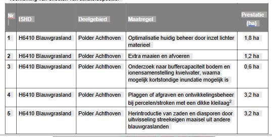 Figuur 40 Overzicht instandhoudingsmaatregelen ter voorkoming van effecten van stikstofdepositie 7.3.4 Drones Inzet van drones komt steeds meer voor. Vliegen met drones (RPAS, alle gewichtsklassen) in het Natura 2000 gebied biedt kansen en risico’s. Kansen voor beheerders om te monitoren met behulp van drones en kansen voor toezichthouders om snel inzicht te krijgen in illegale- en noodsituaties. Inzet van drones kan belangrijke voordelen hebben ten opzichte van helikopters, andere voertuigen en/of menselijke betreding. Inzet van drones brengt ook risico’s met zich mee, wanneer drones zonder actuele kennis van aanwezige natuurwaarden worden ingezet en mogelijk alleen of in cumulatie significante verstoring van deze waarden veroorzaken. Wanneer met een drone in een Natura 2000 gebied gevlogen wordt, dient de bestuurder in elk geval op de hoogte te zijn van deze natuurwaarden, de risico’s van dronegebruik en een wijze van handelen om verstoring te voorkomen. De zorgplicht die volgt uit artikel 1.11 van de Wet natuurbescherming is van toepassing. Onderdeel van die actieve zorgplicht is dat de drone gebruiker aantoonbaar op de hoogte is van de lokale en actuele situatie van de beschermde natuurwaarden inclusief de verstoringsgevoeligheid van die waarden en handelt altijd conform artikel 1.11 van de wet natuurbescherming (zorgplicht). Op die manier wordt incidenteel professioneel gebruik ten behoeve van noodzakelijk toezicht, monitoring, beheer en inrichting en onderzoek van het gebied van overheidswege, in opdracht van de overheid of van terreineigenaren, -beheerders en toezichthouders, zoals beschreven in deze paragraaf, vrijgesteld van de vergunningsplicht. Verslaglegging hiervan ligt bij de gebruiker en kan achteraf via bijvoorbeeld het vlieglogboek. Gebruik voor onbemande HEMS-, SAR-, politie, brandweer- of kustwachtvluchten wordt op een zelfde manier vrijgesteld van de vergunningplicht. Afbakening van relevante natuurdoelen Als gevolg van het vliegen met drones kan fauna verstoord worden, wat invloed kan hebben op de populaties van soorten met een ISHD in het gebied en van typische soorten van habitattypen. Hierbij gaat het concreet om de volgende soorten: A029 purperreiger (broedvogel) A119 porseleinhoen (broedvogel) A197 zwarte stern (broedvogel) A051 krakeend (niet-broedvogel) Bosrietzanger (broedvogel) als typische soort van H6430 ruigten en zomen Gebruik Het vliegen met drones in het gebied is mogelijk conform de vigerende luchtvaartwetgeving. Er wordt reeds incidenteel met drones boven en nabij het Natura 2000-gebied gevlogen, maar gegevens over het daadwerkelijke gebruik van drones in het gebied zijn niet beschikbaar. De verwachting is echter dat deze gebruiksvorm in de nabije toekomst (eerste beheerplanperiode) vanwege de (voortdurende) ontwikkeling van nieuwe toepassingen in intensiteit zal toenemen. Bij de toetsing van deze gebruiksvorm aan de instandhoudingsdoelen wordt hier rekening mee gehouden. Effectbeschrijving Verstoring van (broed)vogels door het vliegen met drones kan niet worden uitgesloten. Dit kan gevolgen hebben voor de populatie van de purperreiger, porseleinhoen, zwarte stern en krakeend in het gebied. Dusdanige verstoring van typische soorten (in dit geval bosrietzanger) dat de soort als typische broedvogel in ruigten en zomen zal verdwijnen wordt vanwege het incidentele gebruik niet verwacht. Negatieve effecten op de kwaliteit van habitattypen worden zodoende niet verwacht. Effectbeoordeling Het effect van vliegen met drones op de aanwezige (broed)vogels is sterk gerelateerd aan de locatie, hoogte waarop gevlogen wordt en de periode in het jaar waarin gevlogen wordt. In de deelgebieden Zouwe en Boezem kunnen zich jaarrond verstorende effecten voordoen als gevolg van het vliegen met drones. In de herfst- en wintermaanden kunnen aanwezige pleisterende krakeenden worden verstoord, in de zomermaanden broedende moerasvogels (purperreiger, porseleinhoen, zwarte stern). In deelgebied Polder Achthoven worden (net als in de directe omgeving van het Natura 2000-gebied beperkte effecten verwacht. Hier gaat het in de zomermaanden om mogelijke verstoring van foeragerende zwarte sterns en purperreigers. Echter beide soorten maken in de zeer ruime omgeving van het Natura 2000-gebied gebruik van het weidegebied als foerageergebied. Incidentele verstoring van foeragerende dieren in Polder Achthoven is naar verwachting niet van invloed op de beschikbaarheid van voldoende foerageergebied van beide soorten. (Incidenteel) gebruik van drones voor beheer, toezicht en monitoring kan het risico van verstoring echter ook verminderen, omdat door dronegebruik betreding en benadering van dichtbij kan worden vermeden. Dit vraagt dat natuurdoelen met kennis van risico’s en effecten worden benaderd. Het gebruik van op afstand bestuurde luchtvaartuigen zonder verbrandingsmotor (RPAS/Drones, alle gewichtsklassen) is in beginsel een vergunningplichtige activiteit (Wnb) voor de onderstaande deelgebieden in de onderstaande perioden: Zouwe en Boezem – jaarrond in verband met de overwintering van de krakeend en het broedseizoen van purperreiger, zwarte stern en porseleinhoen Door in nauw overleg met de terreinbeheerder (Zuid-Hollands Landschap) de betreffende locaties, (minst verstorende) periode en vlieghoogte te bepalen, afgestemd op het dan relevante terreingebruik van de betreffende moerasvogels kunnen effecten van incidenteel professioneel gebruik in de deelgebieden Zouwe en Boezem voorkomen worden. Indien dit aantoonbaar is, waarbij de bestuurder zich dus vooraf afdoende informeert, zorgvuldig handelt en achteraf door middel van verslaglegging (vlieglogboek) aantoonbaar heeft voldaan aan de zorgplicht vereisten conform artikel 1.11 van de Wet Natuurbescherming, kunnen effecten op de ISHD in deelgebieden Zouwe en Boezem eveneens worden uitgesloten. In Polder Achthoven leidt incidenteel gebruik van drones voor beheer, toezicht en monitoring niet tot negatieve gevolgen voor het bereiken van de instandhoudingsdoelen. Tabel 30 Synthese effectbeoordeling drones na mitigatie op de relevante instandhoudingsdoelen (Type gevolgen: ‘0’ =geen gevolg, ‘-‘ = niet-significant negatief gevolg, ‘--‘ = kans op significant negatief gevolg, ‘?’ = onbekend, ‘+’ = positief effect, nvt = niet van toepassing door ontbreken relaties of overlap tijd en ruimte). * Instandhoudingsmaatregelen en –voorwaarden: In nauw overleg met de terreinbeheerder (Zuid-Hollands Landschap) uitwerken van de betreffende locaties, (minst verstorende) periode en vlieghoogte, afgestemd op het dan relevante terreingebruik van de betreffende moerasvogels. Vastleggen van aantal, locatie(s), vlieghoogte van uitgevoerde vluchten in een vlieglogboek en het melden hiervan aan de provincie Zuid-Holland. 7.4Cumulatie
7.4.1 H3150 Meren met krabbenscheer en fonteinkruiden Het habitattype H3150 Meren met Krabbenscheer en Fonteinkruiden heeft zich in het deelgebied De Boezem kunnen ontwikkelen, ondanks het natuurbeheer in het deelgebied De Boezem dat gericht is op de grote modderkruiper (periodieke droogval). Verder is het waterbeheer een mogelijk knelpunt vanwege de invloed van gebiedsvreemd water, maar ook hier geldt dat de waarden zich onder de huidige omstandigheden wel hebben kunnen ontwikkelen. Het huidige gebruik staat het behoud van dit habitattype dan ook niet in de weg. Per saldo zijn er geen negatieve effecten op het instandhoudingsdoel van deze soort in dit gebied. Tabel 31 Cumulatieve effecten van relevant huidig gebruik op het habitattype meren met krabbenscheer en fonteinkruiden (H3150) (type gevolgen: ‘0’ = geen gevolg, ‘-‘ = niet significant negatief gevolg. ‘--' = significant negatief gevolg, ‘?’ onbekend, ‘+’ = positief effect, nvt = niet van toepassing door ontbreken relatie of overlap tijd en ruimte. Effect: effect van huidig gebruik en beheer, de aanvullende voorwaarden of maatregelen. De maatregelen zijn nader uitgewerkt in hoofdstuk 5 en paragraaf 7.3. 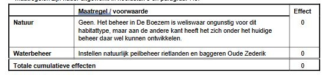
7.4.4 H1134 Bittervoorn, H1145 Grote modderkruiper, H1149 Kleine modderkruiper en H4056 Platte schijfhoren Ten aanzien van de behoudsdoelen zijn er geen gebruiksvormen met een negatief effect op het voorkomen van de kleine en grote modderkruiper. Het gevoerde waterbeheer in De Boezem heeft een positief effect. Het continueren van het huidige beheer is daarmee ook een voorwaarde voor het handhaven van deze soorten. Met betrekking tot Polder Achthoven geldt dat voor het leefgebied van de platte schijfhoren en bittervoorn kleinschalig gefaseerd schonen en baggeren van de smalle watergangen noodzakelijk is om behoud te kunnen garanderen. In deze maatregelen is reeds voorzien. Tabel 34 Cumulatieve effecten van relevant huidig gebruik op de soorten Bittervoorn (H1134), Grote modderkruiper (H1145), Kleine modderkruiper (H1149) en Platte schijfhoren (H4056) (type gevolgen: ‘0’ = geen gevolg, ‘-‘ = niet significant negatief gevolg. ‘--' = significant negatief gevolg, ‘?’ onbekend, ‘+’ = positief effect, nvt = niet van toepassing door ontbreken relatie of overlap tijd en ruimte. Effect: effect van huidig gebruik en beheer, de aanvullende voorwaarden of maatregelen. De maatregelen zijn nader uitgewerkt in hoofdstuk 5 en paragraaf 7.3. 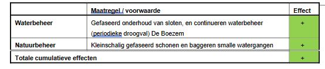
7.4.7 A119 Porseleinhoen Het instandhoudingsdoel voor het porseleinhoen betreft een uitbreidingsdoel terwijl er in de huidige situatie niet of nauwelijks porseleinhoenen in het gebied voorkomen. De populatie in het gebied ontwikkeld zich ongunstig, voor de beschikbaarheid van voldoende leefgebied en broedlocaties in de rietlanden is het nodig om enkele rietlanden te vernatten en het beheer te intensiveren (gericht) op pioniermoeras. Tabel 37 Cumulatieve effecten van relevant huidig gebruik op de soort Porseleinhoen (A119) (type gevolgen: ‘0’ = geen gevolg, ‘-‘ = niet significant negatief gevolg. ‘--' = significant negatief gevolg, ‘?’ onbekend, ‘+’ = positief effect, nvt = niet van toepassing door ontbreken relatie of overlap tijd en ruimte. Effect: effect van huidig gebruik en beheer, de aanvullende voorwaarden of maatregelen. De maatregelen zijn nader uitgewerkt in hoofdstuk 5 en paragraaf 7.3. 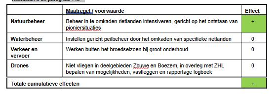
7.4.8 A197 Zwarte stern Het instandhoudingsdoel voor de zwarte stern betreft uitbreiding omvang en/of verbetering van de omvang van broedparen. Feitelijk gaat het om het continueren van de huidige aantallen aan broedparen. De populatie in het gebied ontwikkeld zich matig ongunstig, voor de beschikbaarheid van voldoende broedlocaties is het nodig om rond de kolonie enkele maatregelen te nemen. Tabel 38 Cumulatieve effecten van relevant huidig gebruik op de soort Zwarte stern (A197) (type gevolgen: ‘0’ = geen gevolg, ‘-‘ = niet significant negatief gevolg. ‘--' = significant negatief gevolg, ‘?’ onbekend, ‘+’ = positief effect, nvt = niet van toepassing door ontbreken relatie of overlap tijd en ruimte. Effect: effect van huidig gebruik en beheer, de aanvullende voorwaarden of maatregelen. De maatregelen zijn nader uitgewerkt in hoofdstuk 5 en paragraaf 7.3. 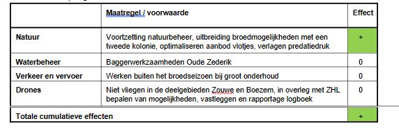 Hoofdstuk 8 Sociaal-economische gevolgen [Gereserveerd]
Hoofdstuk 9 Ruimte voor toekomstige ontwikkelingen
Hoofdstuk 10 Geraadpleegde bronnen Bijlage IOverzicht Informatieobjecten de boezem /join/id/regdata/pv26/2023/GIO006/nld@2023-02-13;1 h3150 meren met krabbenscheer en fonteinkruiden /join/id/regdata/pv26/2023/GIO011/nld@2023-02-13;1 habitatrichtlijngebied /join/id/regdata/pv26/2023/GIO004/nld@2023-02-13;1 natura2000-gebied zouweboezem /join/id/regdata/pv26/2023/GIO002/nld@2023-02-13;1 nieuwe zederik /join/id/regdata/pv26/2023/GIO007/nld@2023-02-13;1 oude zederik /join/id/regdata/pv26/2023/GIO009/nld@2023-02-13;1 polder achthoven /join/id/regdata/pv26/2023/GIO008/nld@2023-02-13;1 vogelrichtlijngebied /join/id/regdata/pv26/2023/GIO003/nld@2023-02-13;1 zoekgebied broedlocatie voor purperreiger /join/id/regdata/pv26/2023/GIO010/nld@2023-02-13;1 zoekgebieden voor leefgebied voor het porseleinhoen /join/id/regdata/pv26/2023/GIO005/nld@2023-02-13;1 zouwe /join/id/regdata/pv26/2023/GIO012/nld@2023-02-13;1 | |||||||||||||||||||||||||||||||||||||||||||||||||||||||||||||||||||||||||||||||||||||||||||||||||||||||||||||||||||||||||||||||||||||||||||||||||||||||||||||||||||||||||||||||||||||||||||||||||||||||||||||||||||||||||||||||||||||||||||||||||||||||||||||||||||||||||||||||||||||||||||||||||||||||||||||||||||||||||||||||||||||||||||||||||||||||||||||||||||||||||||||||||||||||||||||||||||||||||||||||||||||||||||||||||||||||||||||||||||||||||||||||||||||||||||||||||||||||||||||||||||||||||||||||||||||||||||||||||||||||||||||||||||||||||||||||||||||||||||||||||||||||||||||||||||||||||||||||||||||||||||||||||||||||||||||||||||||||||||||||||||||||||||||||||||||||||||||||||||||||||||||||||||||||||||||||||||||||||||||||||||||||||||||||||||||||||||||||||||||||||||||||||||||||||||||||||||||||||||||||||||||||||||||||||||||||||||||||||||||||||||||||||||||||||||||||||||||||||||||||||||||||||||||||||||||||||||||||||||||||||||||||||||||||||||||||||||||||||||||||||||||||||||||||||||||||||||||||||||||||